角色與武器
美術設定集
以同一個身份、同一條時間軸、同一款武器為基準。收錄 38 張角色、敵人與裝備設定板，搭配完整衣著分層、材質、三視圖、配件、狀態與道具交接規格。
10 位具名人物與刻意匿名的尺烏首領；另有替代詠唱祭司獨立設定。
刀兵、槍手、盾衛、影兵、晶狼、晶鼠、冥淵晶爪、晶軀及獅鷲。
銃、刺客短刀、劍客長劍、坦克錘與盾，各自鎖定同款；未完成或損壞只屬狀態。
身份、年代、傷勢與道具交接。不能因美術改動而改寫劇情。
原畫可見的臉、髮型、服裝輪廓與材質。衝突舊圖仍須依新定稿修正。
背面結構、尺寸與色票等新增製作標準；不冒充歷史原稿或故事事實。
凜｜刺客
常態、右臂晶化；硬幣與唯一款短刀另列武器板。
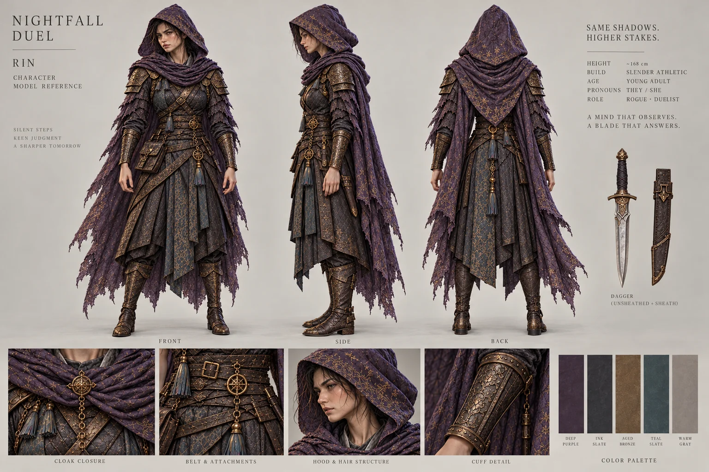

服裝、材質、三視固定項與配件規格
凜｜常態、受傷、覺醒（rin）
主參考：assets/story/actors/rin.webp；rin-wounded.webp；assets/characters/rin-awakened.webp。
既有觀察：年輕成人，窄長輪廓、深棕黑短髮、細長眉眼；深紫兜帽與披肩、古銅邊飾皮甲是核心辨識。受傷版仍是同一張臉。
衣著分層／材質：內層深灰交領衫；軀幹深褐貼身皮甲與交叉皮帶；小型分片肩甲、前臂護具；腰間細皮帶與金屬扣；深灰分片裙襬覆長褲。紫披肩啞光粗織，金屬只作邊緣舊化。
武器配件：短刀與配套鞘唯一用戶assassin-dagger.png款，依腰帶配置；右臂傷勢是劇情狀態；A3割去尺烏制服標誌，前後要分版。H2左手使用伊芙交付的短銃，後背取槍。不可將右臂晶化鏡像到左臂。
正側背固定項：正：兜帽開口、交叉胸帶、腰扣和右臂狀態；側：鼻額、帽尖、胸甲厚度及右臂晶體向外生長；背：紫披肩覆肩範圍、帽根、腰帶與後背銃收納點。三視圖固定同一左右方向。
補設計／界線：背面披肩縫線、腰後銃皮套固定點需補設計；受傷、右臂晶化、夜襲晶體上臉分狀態小框，不能同時灌入常態。
01 凜
色票：紫披肩 #49344F、炭灰內衣 #29282D、深褐皮 #493C34、舊銅 #9A7850、晶青 #8ACBCB；髮 #25201F。內衣交領 → 貼身皮甲 → 胸帶 → 分片小肩甲 → 紫披肩，外層不可穿到胸帶底下忽然消失。披肩背中長0.24H，帽根縫接後領，左右肩可活動；後背皮甲兩條縱縫，不新增家徽。腰帶寬0.025H，皮套懸掛點固定腰後偏左，以左手可抽為原則；短銃長按伊芙銃尺寸。短刃含柄0.22H，鞘口露腰帶下，鞘尖不穿裙片。前臂護具0.14H；晶化時右側護具破裂，非完整金屬包住晶體。割標誌區只畫布邊/縫孔，形狀依A1標誌所在處一一對位；既有原圖無可識別標誌時用獨立輔助框展示D標誌附片位置，不發明宗教/組織圖騰。夜襲臉晶化由右頸沿同側顴骨延伸為D分布，保留左眼與鼻口可識別。
朔｜劍客
前傳米白袍／十年後深色袍；同一款劍與鞘。
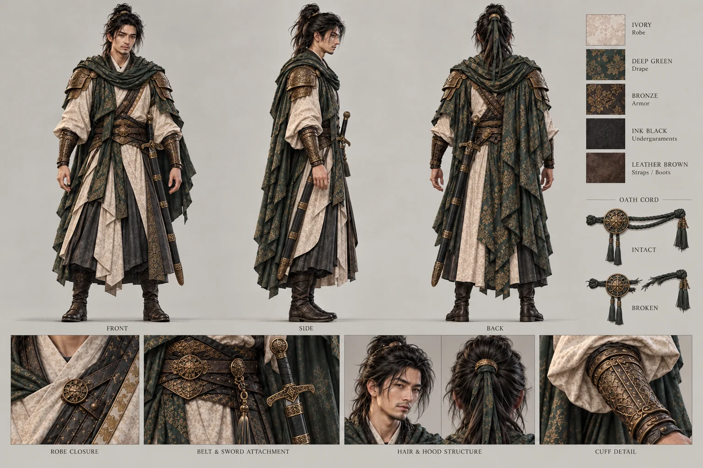
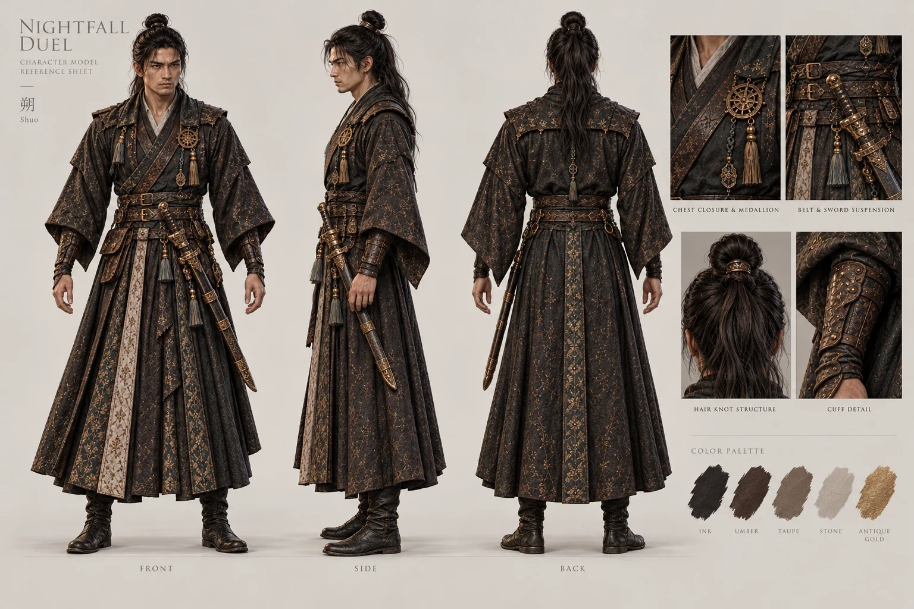
服裝、材質、三視固定項與配件規格
朔｜年輕、成年、受傷（shuo）
主參考：assets/story/actors/shuo-young.webp；shuo.webp；shuo-wounded.webp。
既有觀察：黑色高髻與散落鬢髮，清瘦長臉。年輕為米白內袍、綠巾和古銅肩甲；成年現行立繪為深黑褐長袍與斜胸帶，不能拿舊選角白袍覆蓋。
衣著分層／材質：年輕：米白布袍、暗綠披巾、輕型肩甲、皮護腕；成年：暗褐交領內袍、深色長外袍、窄皮帶/織帶層疊束腰，金屬圓章於胸；受傷為前傳白袍破損/污漬。
武器配件：同款W-SWORD長劍與長鞘，跨年代/卡面/情境不換款；書籤為劇情物件，不永久縫在衣服。前傳師承造型要與伊藤有共同服裝語言，但臉不能相同。
正側背固定項：正：高髻、斜帶、交領方向；側：髻高度、劍鞘離髖距離；背：髻結與長外袍中縫、腰帶如何穿過鞘吊帶。受傷不改五官。
補設計／界線：成年背面採中縫下開衩以利步行；劍鞘固定於左腰作統一新設計，若後续故事權威另定慣用手則回到產品調整。
02 朔
色票：前傳米白 #D6CDB7、巾綠 #405C50、成年外袍 #292A27、皮 #584637、銅 #9B7E51；髮 #24221F。前傳內衫 → 米白交領長袍 → 腰束 → 綠巾/肩甲；成年改深褐內袍與黑外袍，骨架不變。外袍下襬到腳踝上0.07H；背中縫從後領到襬，下0.24H開衩，內層在開衩可見。左腰鞘以兩個短吊帶固定腰帶，離髖0.025H；劍含柄0.56H，鞘略長刃部，非比整把劍長。髻高0.045H，背面見髮結固定繩；書籤0.08H×0.015H，不縫上胸口。斷誓約繩前後沿同一肩接點，傷手細節標左右尚未由C確立。
格蘭｜坦克
新兵銀灰甲／成年古銅甲；唯一款錘與救援盾。
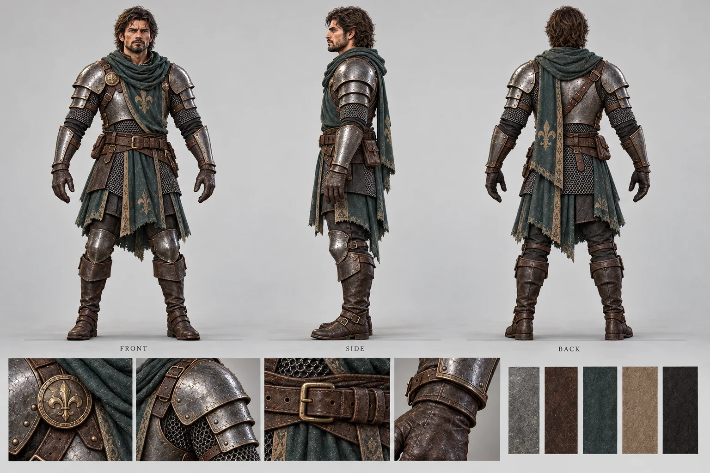
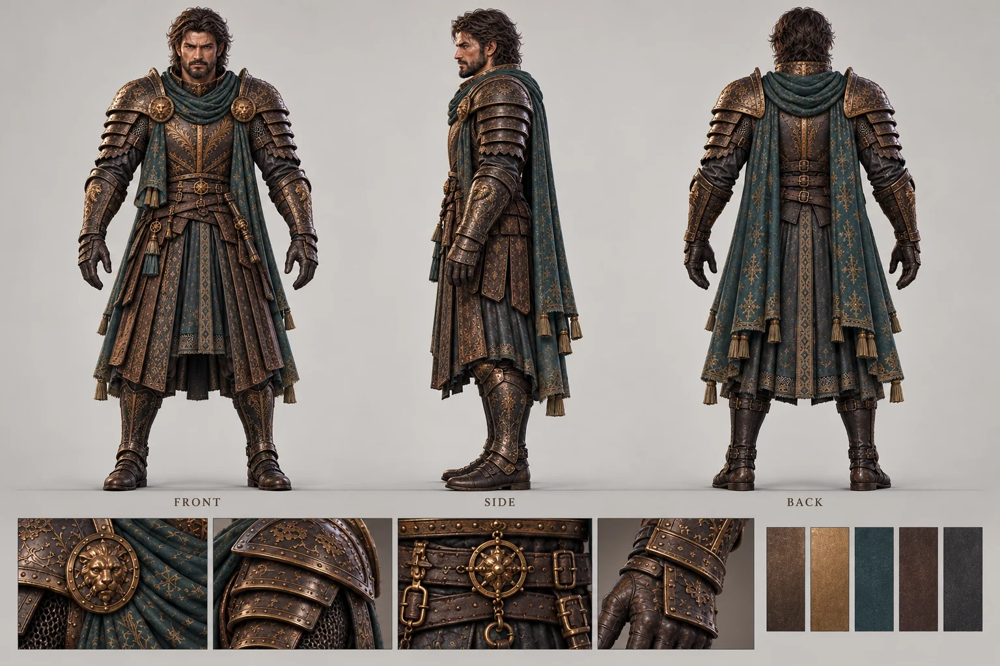
服裝、材質、三視固定項與配件規格
格蘭｜年輕、成年（gran）
主參考：assets/story/actors/gran-young.webp；gran.webp。
既有觀察：寬肩強壯、棕髮、方顎短鬍。年輕較淺棕髮、銀灰平滑胸甲與簡潔分片肩甲；成年深棕髮、較濃鬍鬚、古銅雕花胸肩甲。兩期皆有暗青綠圍巾。
衣著分層／材質：年輕：鏈甲內襯→銀灰胸甲→皮帶、青綠垂布與少量金邊；成年：深色內衣→古銅胸甲、更多肩臂層片→青綠披巾/裙片、雕花護腕。金屬重量感和青綠布色相固定。
武器配件：大型青綠金紋盾，盾面長而上寬下收；武器只能是W-GRAN-HAMMER唯一款錘，不能留長劍或劍鞘；情境撐盾時錘可收納。頭部以立繪無頭盔為準。前傳盾含暮晶片、可插地且有接應可抓的背帶；成年主線腰間加王室蠟印命令筒，礦坑後盾裂狀態另列。初始卡/選角重盾版留作現行獨立資產，不在此任務替換。
正側背固定項：正：肩宽、兩胸扣、圍巾、盾的尺寸比例；側：胸甲厚度、盾弧度與握把；背：肩甲鉸接、背板分段、圍巾自然落點。盾另列正/側/背小件圖，說明握把與前臂帶。
補設計／界線：背板與盾背握帶未由立繪完整確認，補為兩段背板、皮革臂帶＋直握把；年輕/成年同設計；刻痕可因實物使用不同，但不改盾面圖樣、配色或部件。裂位採production-guide固定圖。
03 格蘭
色票：巾青綠 #355E59、年輕鋼 #9BABA9、成年銅 #9A744A、內襯 #343C3A、皮 #5B4737；年輕髮 #77573E、成年髮 #4D382B。內衣 → 鏈甲/襯墊 → 胸背板 → 腰帶 → 肩甲/青綠巾；金屬邊不直接割裸頸。胸甲側面用兩條短皮帶接背板；背板上肩胛一片、腰背一片，中間滑疊0.02H。成年肩甲每側3主層；新兵2主層為D統一目標，不能三視變層數。盾高0.57H、寬0.30H、弧深0.04H，厚邊0.015H；盾背一握把、一前臂皮帶及一可拆背帶，暮晶片插槽放盾背上三分之一避免手掌壓住。命令筒長0.14H、徑0.035H，掛腰右側，蠟印藏於筒蓋繩結；盾持哪手為D畫面配置，不宣稱慣用手。新兵與成年盾不能硬說是同一件未斷的實物；使用同一盾設計、各自破損時序。
伊芙・赫森｜槍手
研究服為故事時間軸；酒紅皮衣為職業戰鬥造型。

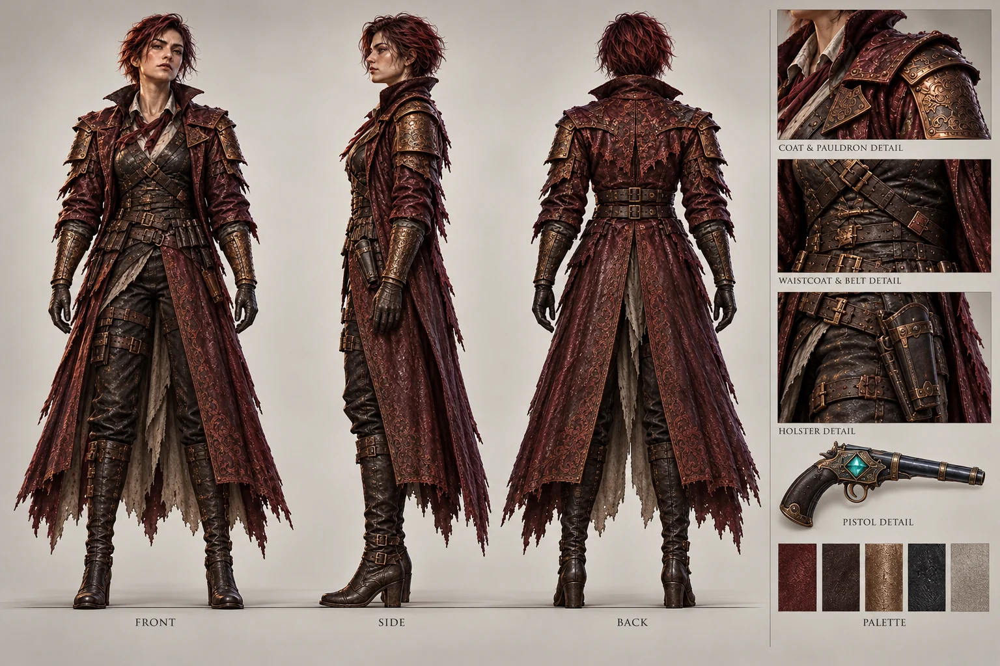
服裝、材質、三視固定項與配件規格
伊芙・赫森｜研究服、持銃、戰鬥服（eve）
主參考：assets/story/actors/eve.webp；assets/story/actors/gun-unify/eve-armed.webp；gunner.webp。
既有觀察：短紅褐髮、偏瘦銳利臉；研究服是髒米白長外套、暗紅領巾與褐色束帶。戰鬥職業版暗酒紅皮衣；不能把戰鬥皮衣當研究室時間軸常服。
衣著分層／材質：研究：白衫/暗紅領巾→深褐皮背心與交叉扣帶→米白長外套、袖口翻折；下身深褐褲、皮靴，手套露指。戰鬥：酒紅長皮外衣、古銅護肩與護臂、腰帶。
武器配件：用戶gunner-pistol.png為唯一主參考：黑圓槍管、古金箍與裝飾、側面菱形青晶、彎握把；研究書冊/紙件可另列，不固定每場都拿。禁止回退旧长步槍。E3組裝完成前無完成銃；H2交給凜後空槍套，不能再持同一把槍。
正側背固定項：正：紅髮輪廓、紅領巾、外套扣帶；側：短銃實際長度、書冊厚度、外套開衩；背：外套肩縫與腰節、槍套吊點。武器三視圖保持槍口、握把、晶件順序。
補設計／界線：未見的背部裁片補為單後中縫、腰帶穿兩固定袢；研究版與戰鬥版分别成組，跨狀態只共用面貌及短銃。
04 伊芙・赫森
色票：研究衣 #D6CCB5、領巾 #783D39、皮背心 #594437、戰鬥酒紅 #593139、銅 #A47D4D；髮 #9C4E32、晶件 #7AC9CC。內衫 → 皮背心 → 紅領巾 → 米白外套，腰帶穿外套固定袢，紙件內袋不能讓袋口浮空。背單中縫、肩胛左右兩片裁片、腰節連後襬；後衩0.23H，袖口反折0.035H。短銃統一W-PISTOL，用戶圖優先；全長0.23H只是排版尺度，握把/槍管/菱晶比例照主圖，不生新炮管。腰側皮套口略高於扳機護圈，H2後空套保持外形。信袋0.12H×0.08H貼內胸，不把所有文件捧在外面。E3火損選外套下襬與袖緣為D固定位置，三面對位；戰鬥職業皮衣獨立板，不作時間軸換衣斷言。
磷｜嬰兒與孩子
襁褓三方向與當代兒童三視；不設未來成年版。
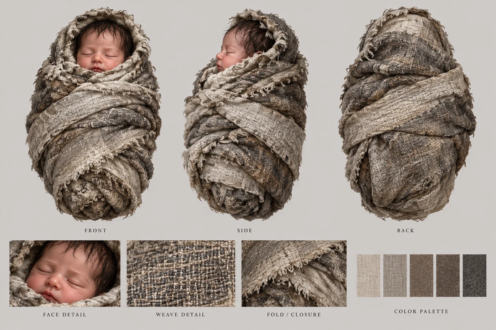
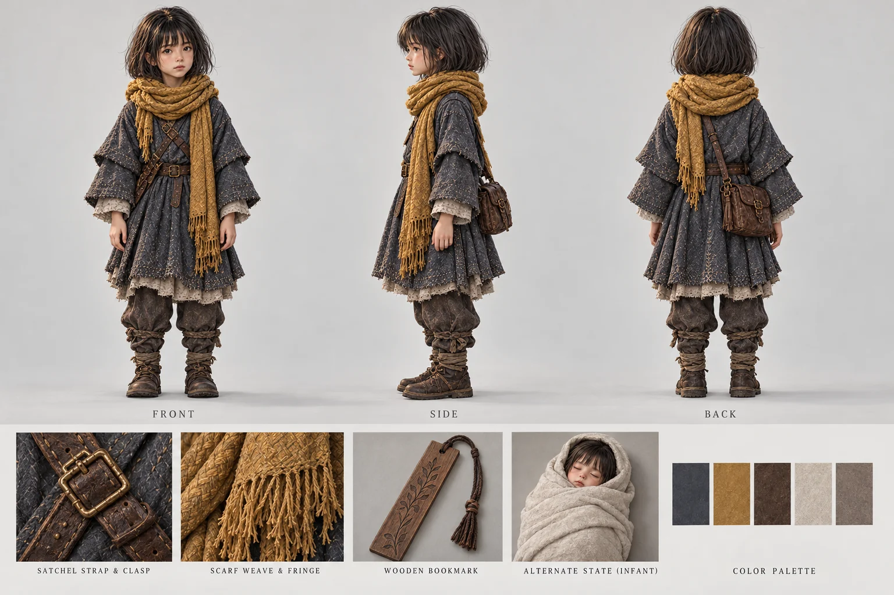
服裝、材質、三視固定項與配件規格
磷｜嬰兒、當代孩子（phosphor）
主參考：assets/story/actors/phosphor.webp；assets/story/illustrations/chapters/p1-morwell-ruins.webp。
既有觀察：當代為黑褐齊頷短髮與不整齊瀏海、圓臉孩子；芥末黃長圍巾、寬大灰藍衣、斜挎小袋。
衣著分層／材質：灰藍粗布外袍→深色交領內衣→褐色褲和包腳鞋；黃圍巾粗織與長流蘇是主要高對比。保持兒童頭身比，不能縮小成人身體代替。
武器配件：木書籤、暮晶與路線筆記是可交接劇情道具；袋子只負責收納，不能把每項道具永久露出。
正側背固定項：正：瀏海、黃圍巾垂端和寬袖；側：兒童額鼻曲線、挎袋位置；背：短髮齊頷長度、袋帶連續走向和圍巾尾。嬰兒独立襁褓正/側/背，不畫成年臉。
補設計／界線：嬰兒服與背面袋扣未有完整參照，襁褓採無圖案舊米色布；不生成未來成年磷或疲憊成年版。
05 磷
色票：外衣灰藍 #60717C、圍巾黃 #BDA454、內衣 #454847、袋皮 #735B41、鞋 #494136；髮 #302B28。兒童頭身比例沿原圖，不以成年人H等縮。內衫 → 寬袖外衣 → 黃圍巾 → 單斜袋；外衣背中一條縫，無成人收腰胸省。袋寬0.16H、高0.13H、厚0.035H，帶寬0.025H；背面必連至同一袋，袋底至髖下即可。圍巾寬0.065H、單側可見垂端0.22H，流蘇0.025H，避免勒頸或拖地。木書籤沿物件實際固定大小，不能因持有人變小而縮成另一枚。嬰兒襁褓用 #C9BFA9、內布 #E2D8C4，只露臉與少量頭髮，背面摺布可追溯，無鎧甲、晶體植入或武器。
納爾瓦｜祭司
年輕、成年、腹部受傷；同一紅棕髮身份。
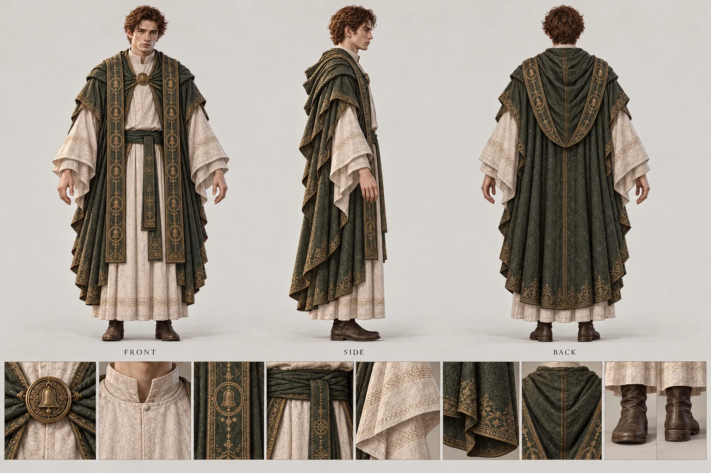
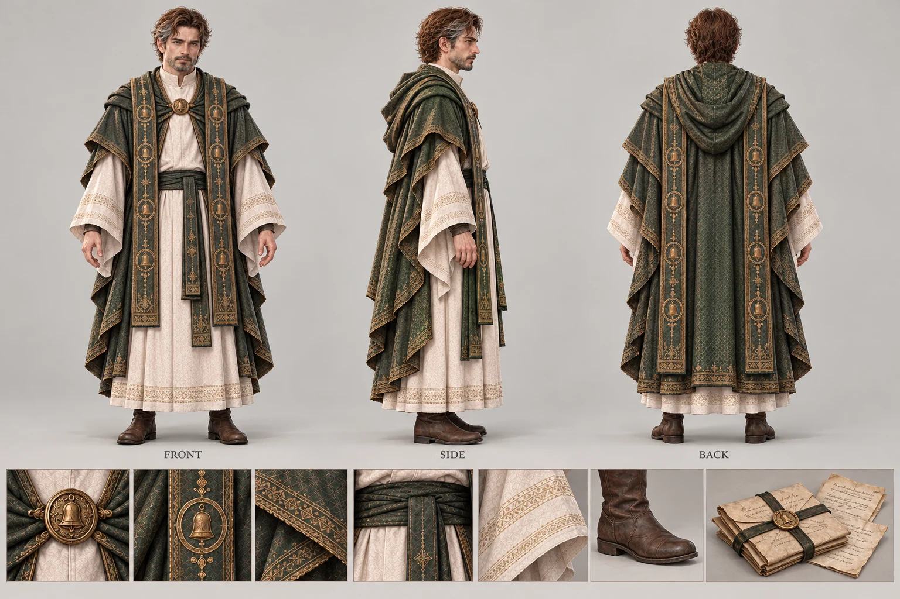
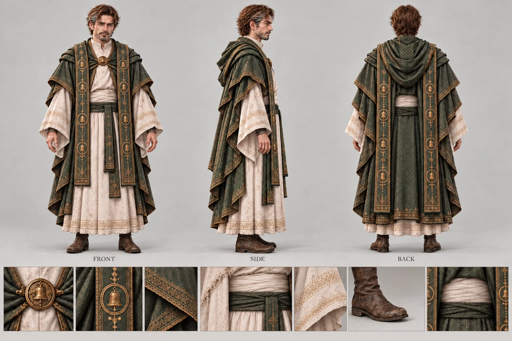
服裝、材質、三視固定項與配件規格
納爾瓦｜年輕、成年、受傷（narva）
主參考：assets/story/actors/narva/father-young.webp；father.webp；father-wounded.webp。
既有觀察：年輕紅棕髮、乾淨下巴；成年同色髮帶鬍鬚，面容疲憊。新narva系列為主，不採extra/father-wounded黑髮舊版。
衣著分層／材質：米白寬袖長袍、暗綠帶古金圖樣的長披肩/披風、圓形領扣、綠色腰束；布料柔軟啞光。受傷版同裝束加裂口、塵土與按腹動作。
武器配件：木書籤、紀錄文件、暮晶屬劇情可交接物。無固定武器，別因袍服替他添加魔法杖。
正側背固定項：正：圓領扣、兩條金邊垂帶、腰束；側：紅棕髮形、白袖層次；背：綠披風肩部接縫、兩側長條紋延續。三期共用鼻樑及耳位。
補設計／界線：背面垂布以同正面邊紋延續為補設計，不新增宗教徽記；受傷位置與canon同步，不隨手把腹傷改成斷臂。
06 納爾瓦
色票：袍白 #D6CEB9、披布綠 #36574B、束腰 #526D57、金邊 #A78B52、靴 #534638；髮 #8B5539。寬袖白袍 → 綠腰束 → 綠披肩，領圓扣徑0.035H；長垂帶寬0.07H、下垂至膝下。背披布由後領整片展開，金邊寬0.006H，僅沿既有邊紋，不加巨大新聖徽。袍襬距地0.04H、袖口闊0.08H，側縫留步行量。紀錄袋0.13H×0.10H掛腰，不作永久神聖器具；書籤交出後袋口可空。年輕乾淨下巴，成年鬍與疲態沿原圖；受傷按narva系列位置做同材質破口，絕不用黑髮舊版換頭。
赫爾曼｜博士
銀髮眼鏡與研究長外套；未完成武器為同一槍型的製作狀態。
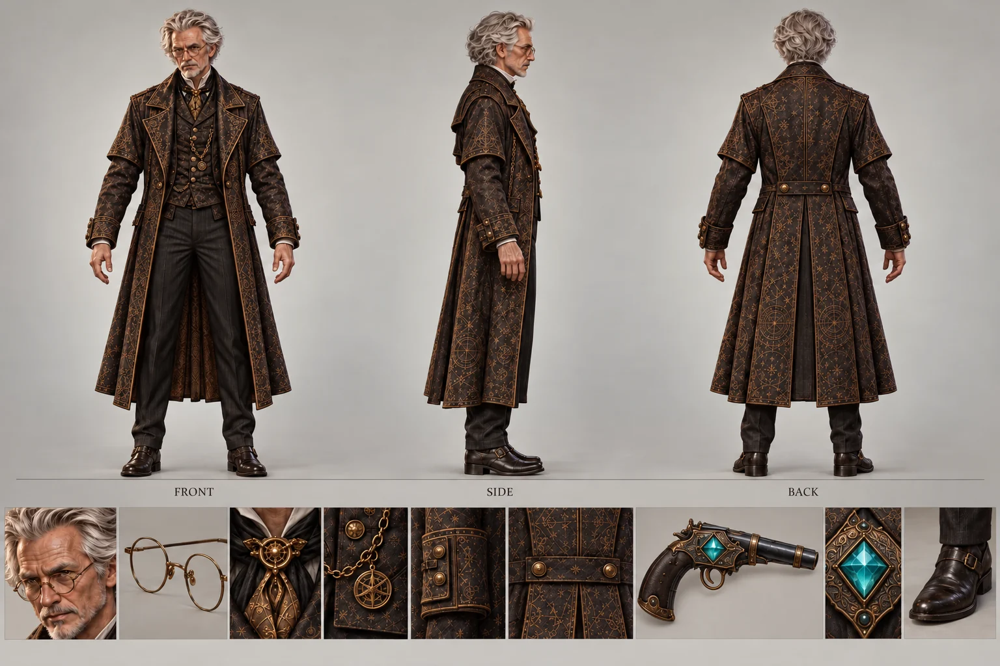
服裝、材質、三視固定項與配件規格
赫爾曼（herman）
主參考：assets/story/actors/herman.webp；assets/story/actors/gun-unify/herman.webp。
既有觀察：銀白後梳短髮、皺紋與窄框眼鏡、瘦削老年臉。研究立繪空手；戰鬥版拿短實驗銃。
衣著分層／材質：黑褐襯衫與領巾→多扣深色背心→深咖啡古金鑲邊長外套；黑褲與皮鞋，布面精緻但舊。
武器配件：細金屬眼鏡、實驗短銃。實驗銃與伊芙、一般槍手、凜借銃為同一基礎款；只有未完成狀態，不保留不同輪廓。用戶gunner-pistol.png優先，不可用舊長槍。
正側背固定項：正：眼鏡、額紋、多扣背心；側：眼鏡腳、弓背幅度與握槍手；背：大翻領後頸、外套後開衩。
補設計／界線：背部補單中縫與兩片後襬，不新增研究組織徽章。
07 赫爾曼
色票：長外套 #4B3B31、背心 #332E29、襯衣 #665849、金邊 #A18653、眼鏡 #B0A58C；髮 #C7C5BB。襯衣/領巾 → 多扣背心 → 長外套；背心5扣為D，扣距一致，外套不加重甲。背中縫、腰後收省兩條、下襬雙片開衩0.25H；領後翻面與正面厚度相同。眼鏡框高0.018H、鏡腳連到耳後；不畫漂浮鏡框。實驗短銃是W-PISTOL同款同尺寸的未完成狀態；只可局部未固定，不改用戶图槍管、菱晶、握把比例，不新增線圈。工具口袋寬0.06H位外套內，不必新增滿身藥瓶。
伊藤｜師父
前傳與當代獨立三視；年輕時已是朔的師父。
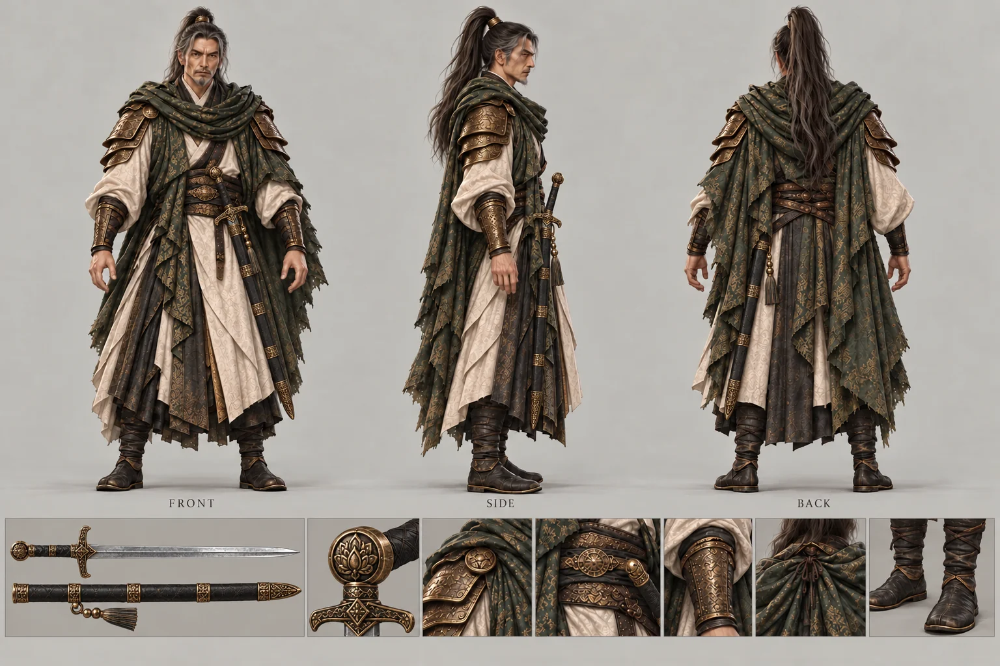
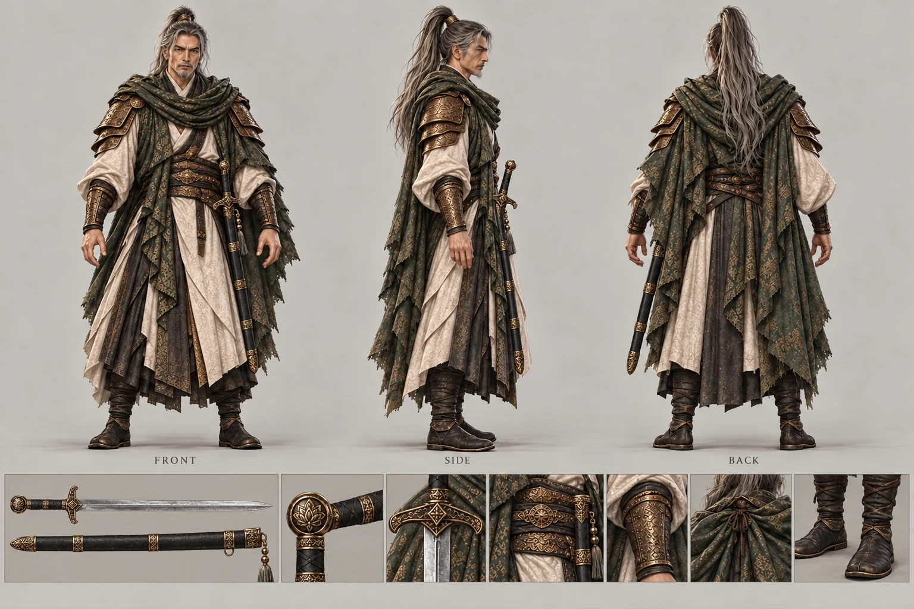
服裝、材質、三視固定項與配件規格
伊藤｜前傳、當代、疲憊（ito）
主參考：assets/story/actors/ito.webp；assets/characters/enemies/ito.webp。
既有觀察：灰白高束長髮、長眉、窄眼與深刻法令紋；一看可知朔師承但年長。
衣著分層／材質：米白交領長袍、綠黑披巾、古銅寬肩甲、腰間織帶和皮具、護腕；成年當代保留老化髮色。
武器配件：W-SWORD同款長劍與劍鞘，不另設師父輪廓；當代H2疲憊單膝跪地只是狀態，不增加重傷義肢。
正側背固定項：正：灰白髻、長眉和領口；側：髮束長度及劍鞘角度；背：長髮落點、肩甲連接及披巾。
補設計／界線：十年前前傳版可減少白髮與深紋，但不能換成朔臉；具體髮色分布和背面束髮繩為補設計。
08 伊藤
色票：白袍 #D7CEB7、巾綠黑 #344B40、肩銅 #937347、皮 #574434、髮灰 #BCBAB0。師承與朔共享交領及束腰語彙，肩甲更寬；白內袍 → 腰束 → 綠披巾 → 銅肩甲，披巾不能穿透甲片。背面長髮落到上背0.18H，束繩固定髻根；肩甲背鉸接兩點，留頭頸轉動空間。劍含柄0.56H、左腰鞘吊帶為D，與朔同工藝不同磨耗。前傳減少白髮比例屬D，不宣稱確切歲數；當代額紋、髮白沿V。疲憊板只改姿態、灰塵與自然褶，不新增血淋傷口或義肢。
路易斯｜國王
常態與晶化共用臉、衣甲與額前控制頭裝。
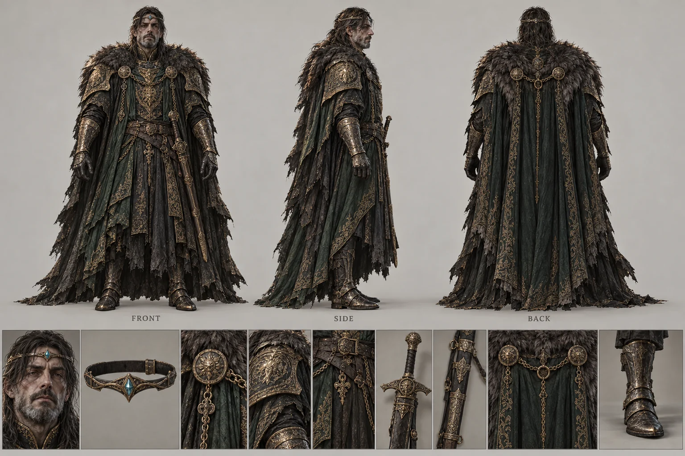
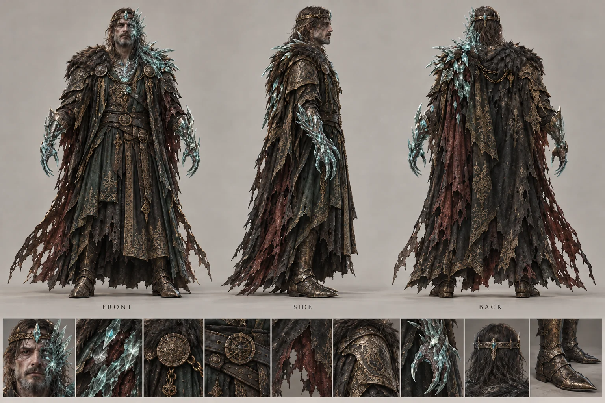
服裝、材質、三視固定項與配件規格
路易斯｜人形、披甲、晶化（louis）
主參考：assets/story/actors/louis.webp；assets/characters/enemies/king-armored.webp；king-crystal.webp。
既有觀察：成熟男性深色長髮與鬍、沉重黑綠衣袍、厚毛皮肩領、古金金屬護具。晶化版保留同一身衣服但晶體大量外突。
衣著分層／材質：深綠黑長袍→雕花胸甲及金属護臂→黑褐毛皮肩披與長斗篷；面料厚重、高位者質感。
武器配件：王室控制頭戴裝置是劇情裝備，需與對應情境圖核對；不把常態戴冠當前提。晶化只在變異後。
正側背固定項：正：毛皮肩領、圓胸扣、同一臉與頭裝；側：毛皮厚度、背披下垂及晶刺方向；背：披風破裂位置、晶體穿出孔一致。
補設計／界線：常態立繪頭頂細節不足，額前暮晶頭戴控制器是canon必備，另用H1情境參考補足結構；晶化先固定一張正側背生長分布圖，禁止三面各長一套。
09 路易斯
色票：王袍 #263B32、斗篷 #252822、毛皮 #4A4437、古金 #A0844B、晶青 #89C8CA；髮鬍 #352C26。內袍 → 雕花胸甲 → 毛皮肩領 → 長斗篷；肩領厚0.045H，不能蓋掉頭戴控制器。背斗篷分中央大裁片與側褶，長至地上0.02H；胸甲側帶接背板。額晶直徑約0.035H，低金屬額箍寬0.015H，兩側連後頭調節帶，與髮分層；不是懸浮寶石。佩劍含柄0.55H，鞘腰側D。晶化先固定右肩大簇、胸兩側小簇、背脊一組為D分布，避開全遮面；衣破洞環繞穿出點，後背不得毫無破口。倒下後晶體顏色降至 #455957，無自主发光。
尺烏首領｜刻意匿名
美術以A1現行尺烏首領概念圖為依據：編髮、黑色面罩、青綠披巾；不補真名或專屬武器。
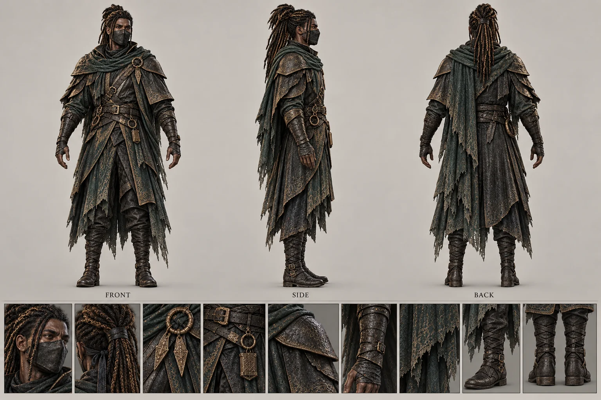
服裝、材質、三視固定項與配件規格
尺烏首腦｜刻意無真名（boss）
主參考：assets/story/actors/boss.webp。
既有觀察：深棕編束長髮、下半臉黑布遮擋、眼部冷峻；肩甲上青綠披巾。不能賦予故事未確認真名。
衣著分層／材質：黑灰分層長衣、褐皮斜帶、古銅肩甲、護腕、腰帶與多片裙襬，暗綠披巾繞肩。
武器配件：面罩與腰帶圓章；原立繪未清楚持武器，主設計不追加專屬神兵。
正側背固定項：正：編髮和面罩上緣；側：額髮、面罩固定及披巾厚度；背：編髮根部和披巾落點。
補設計／界線：美術依據須追溯A1現行尺烏首領概念圖：assets/story/actors/boss.webp。面罩後繫帶、背腰袋、必要靴子形制屬新增設計；不得用enemy-shadow臉替代首腦。
10 尺烏首腦
色票：主衣 #30322E、披巾 #355B51、皮 #554337、甲銅 #8E744E、面罩 #202723；髮 #49352B。黑灰長衣 → 腰帶/胸斜帶 → 小肩甲 → 青綠巾；編髮不與披肩混成布條。面罩後繫帶在枕骨下打平結，尾端0.04H；領口仍有呼吸空間。背中縫與兩側開衩，背腰小袋寬0.09H、厚0.025H；不加大型背劍。圓腰章徑0.035H，紋理模糊沿V、不另設新可讀徽記。袖口護腕0.12H，靴到小腿下三分之一。不能因蒙面將眼額改為影兵。
馬德爾｜副手
身份有依據；全套外貌為本次補設計 D。
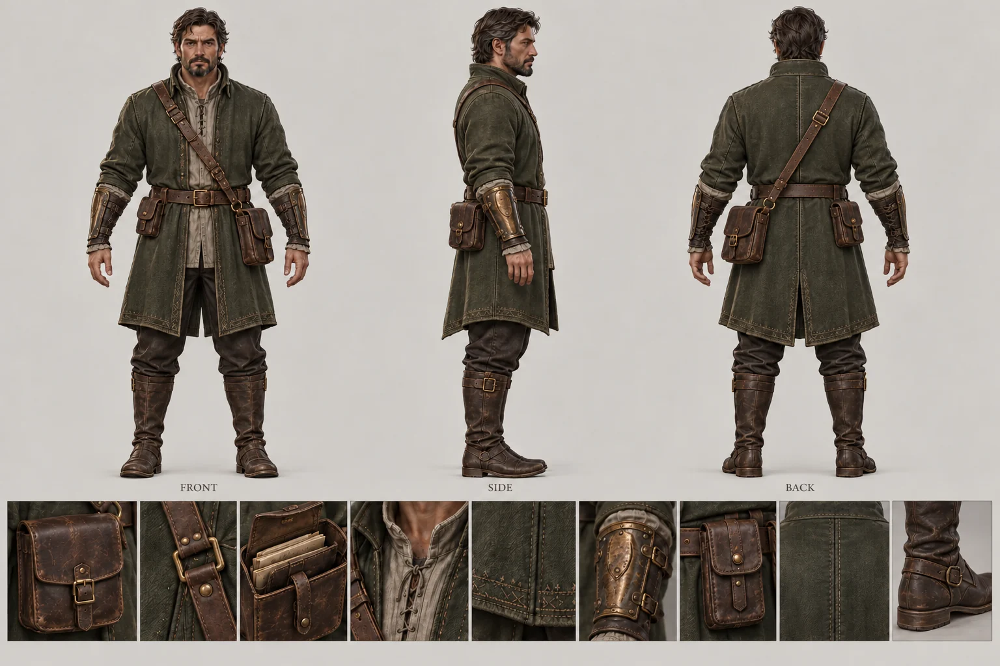
服裝、材質、三視固定項與配件規格
馬德爾｜無獨立原圖（madel）
主參考：無；姓名依STORY-NAMES-018確認，當代格蘭副手，無精確年齡canon。
既有觀察：尚無可證明本人外貌的獨立圖；T1–T3匿名接應者不能自動認定為馬德爾。以下整套為新增概念。
衣著分層／材質：新提案：務實中年接應者，短深褐髮帶少量灰鬢、寬鼻與下顎短鬍；暗橄欖外套、灰麻內衫、褐革肩帶、簡潔護腕，與格蘭重甲區分。
武器配件：小型文件袋與繫繩是新提案；武器暫不加，身份細節交canon核對。
正側背固定項：正：寬鼻、灰鬢、斜袋帶；側：短髮和實用腰包厚度；背：不加大披風，肩帶連到袋身，衣後中縫。
補設計／界線：整套均新增，不是既有canon；產品整合確認身份後可採用，不能當作原遊戲已有造型。
11 馬德爾
全套D：短深褐髮、少量灰鬢、寬鼻與短鬍，不附精確年齡。色票：橄欖外套 #586044、灰麻 #ACA18A、皮 #67503A、鐵 #74786E、文袋 #806344。灰衫 → 實用外套 → 斜肩文件帶 → 簡護腕；無格蘭同款大胸甲與披風。外套長至大腿中段，背中縫、肩胛水平育克與下0.12H小開衩；袖口雙扣，肩帶不穿袖籠。文件袋0.17H×0.12H×0.035H，左肩斜至右髖，袋蓋一扣；腰繩直徑0.007H、束成0.06H圈，僅普通繩。無固定武器，避免從造型新增戰鬥職能。此人不能替換前傳匿名隊員。
替代詠唱祭司｜匿名
P1獨立祭司，與納爾瓦分開；外貌與服裝細節為 D。
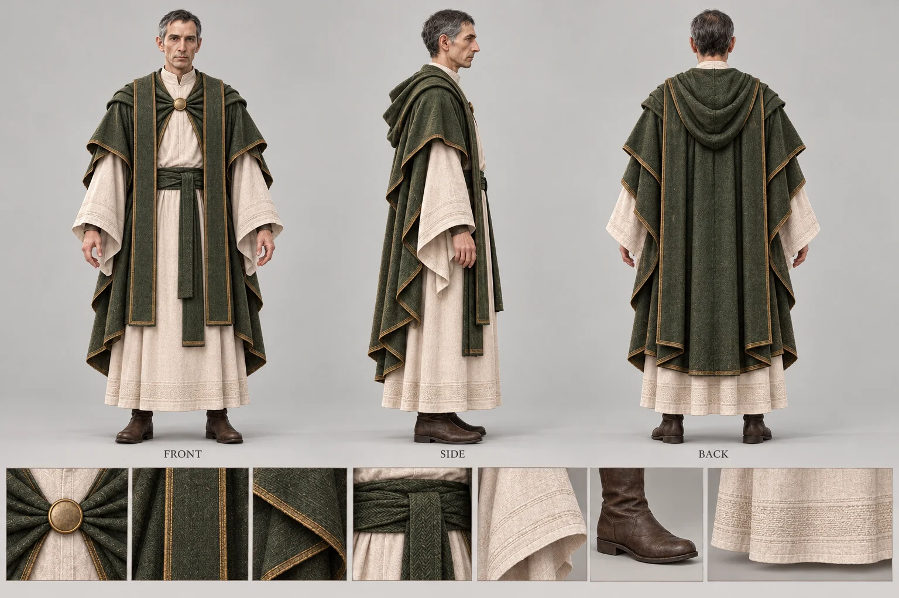
服裝、材質、三視固定項與配件規格
伊藤與祭司必交三視圖清單
明確收錄伊藤前傳、當代兩套；前傳已有師父身份、當代保持同一臉骨架與年齡變化，H2疲憊補狀態框。武器均W-SWORD，不能以不同劍型區分年代。
明確收錄納爾瓦年輕、成年、受傷三套/狀態板，統一紅棕髮，年輕下巴乾淨、成年鬍與疲態，受傷沿同一當代衣服加傷痕，不偷換黑髮舊圖。
替代詠唱祭司另交獨立正側背：他是P1替納爾瓦完成詠唱的匿名人物，不是納爾瓦換衣，也不新增姓名。此套從一般匿名模板提升為必要獨立板；其餘匿名路人仍可共用服裝模板。D外貌採普通成年人、深灰棕短髮、乾淨下巴；米白袍 #CFC6AF、灰綠披帶 #667364、素圓扣 #9A947D；後背單中縫、披帶直落上背、布腰束，不複製納爾瓦金紋長綠披風或紅棕鬍臉。無法杖、無新增護身能力。比例、背面与脸是本次補設計，人物替代身份才是C。
一般刀兵
普通守衛與追兵模板，不借用主角面貌。
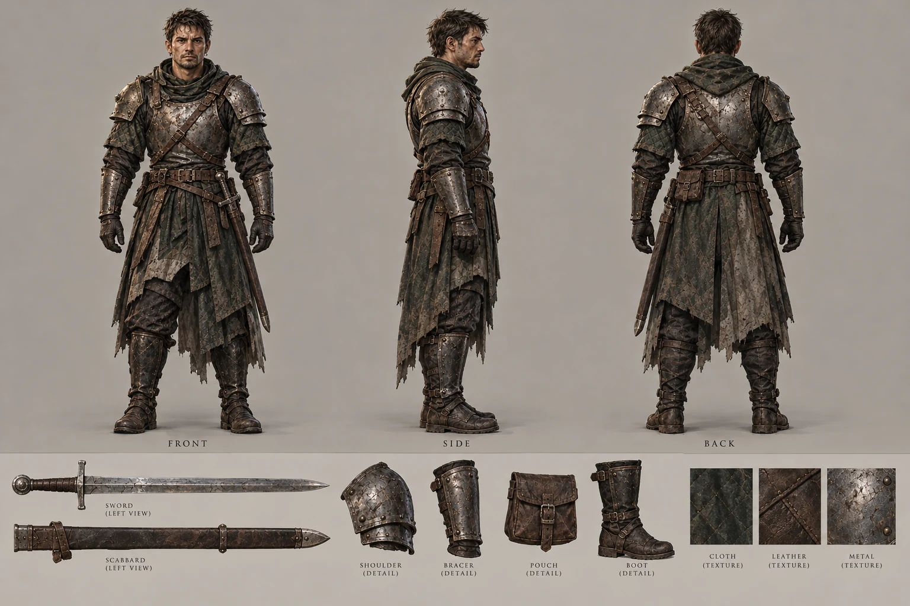
服裝、材質、三視固定項與配件規格
一般刀兵（enemy-blade）
主參考：assets/characters/enemies/enemy-blade.webp。
既有觀察：短褐髮、略粗獷成人臉、無兜帽，普通士兵體型。
衣著分層／材質：褐黑交領布衣、灰鋼肩甲/胸片、皮革束腰、深色分片衣襬、護腕。金屬不使用主角花紋。
武器配件：直長劍＋簡單護手；左腰劍鞘。
正側背固定項：正劍兵胸甲輪廓；側肩甲層數與劍長；背簡單背板與腰鞘固定。
補設計／界線：背板鉚釘和鞘帶新補；不同陣營僅以任務指定小色帶區分，不能自創陣營徽記。
12 刀兵
色票：軍衣 #4D493E、內衣 #353B38、鋼 #818C87、皮 #594735、磨邊 #B0B5A8。布內衣 → 薄襯墊 → 小胸片/肩甲 → 腰帶；後背素背板三個主鉚接區，不飾主角紋章。肩甲2片，護腕0.13H，靴筒0.17H；衣襬後開衩0.16H。劍含柄0.50H，直護手寬0.075H，左腰鞘D。額髮與臉可做群眾小變化但制服版型不變；不因刀兵職稱擅定出身或善惡。
一般槍手
軍服與帽飾獨立；槍型仍為使用者唯一指定款。
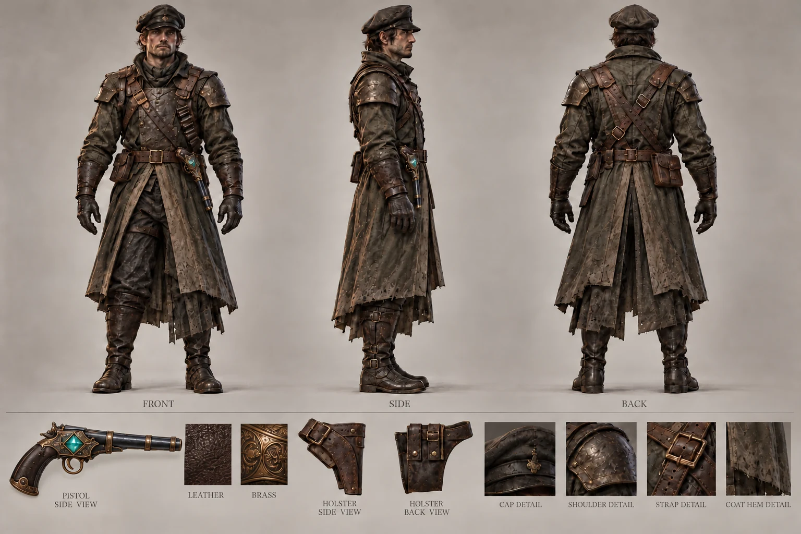
服裝、材質、三視固定項與配件規格
一般槍手（enemy-gunner）
主參考：assets/story/actors/gun-unify/enemy-gunner.webp。
既有觀察：灰褐帽、短鬍、深色軍服與斜帶；既有gun-unify可供現況對照；修圖基準是用戶gunner-pistol.png唯一同款。
衣著分層／材質：褐色軍帽、暗綠立領上衣、灰鋼單肩護片、交叉皮帶、長衣下襬、手套。
武器配件：W-PISTOL唯一同款銃，側面菱形青晶與金箍等依用戶圖，不另做軍用簡化款；腰間小工具袋，禁止長步槍回流。
正側背固定項：正：帽簷、斜帶與短銃；側：槍總長和握把；背：槍套/皮帶連續固定。
補設計／界線：背套和袋內內容非既有證據，僅補可行結構，不新增彈藥規則。
13 槍兵
色票：軍衣綠 #3D4C3E、帽 #746954、皮 #574533、銃黑 #303A39、銅 #9F7F4C；晶 #7ACBCD。立領內衣 → 軍外衣 → 斜帶 → 小肩護片；背面帶子連腰套，無無用途交叉線。帽簷伸0.035H、冠高0.04H；外衣後開衩0.16H，工具袋0.075H×0.06H。短銃共用W-PISTOL用戶圖；0.23H僅排版尺度，內部比例同主圖，不轉長步槍。銃套側腰以兩袢固定，背面能看到尾端；不新增彈藥類型、射速或魔法器官。
一般盾衛
素鋼盾與短柄錘；不得換成格蘭的金紋裝備。
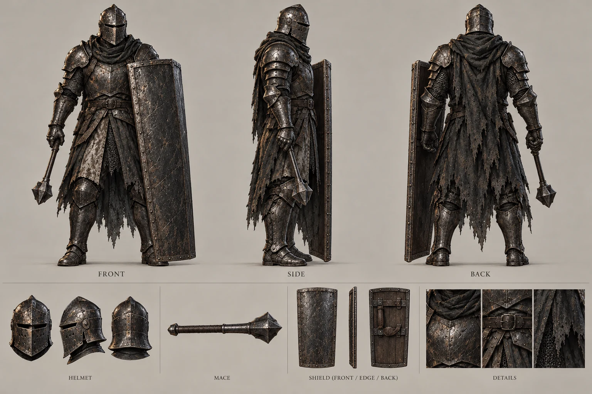
服裝、材質、三視固定項與配件規格
一般盾衛（enemy-shield）
主參考：assets/characters/enemies/enemy-shield.webp。
既有觀察：遮臉封閉頭盔、深灰鋼甲、巨大素面長盾，輪廓沉重。
衣著分層／材質：鏈甲內襯、胸甲、肩甲、護臂、長衣片與護腿；黑灰金屬只有磨痕。
武器配件：長方形略收下角盾，盾面厚邊框；配原圖稜角短柄錘W-ENEMY-SHIELD-HAMMER，非短劍；它與格蘭W-GRAN-HAMMER為不同身份資產。與格蘭青綠金紋盾明確區隔。
正側背固定項：正：面罩窄眼縫、素盾；側：盾厚度、盔後延伸；背：雙皮臂帶與握把、背板分段。
補設計／界線：盾背握法與盔頸護片新補；不加格蘭家徽。
14 盾衛
色票：鋼 #606C6D、深鋼 #354245、內襯 #383A34、皮 #514431、磨邊 #9DA8A3。鏈襯 → 胸背甲 → 分片肩/腿甲 → 護頸盔；背板三段滑疊，後頸至少留0.02H活動縫。盔眼縫高0.008H，背面護頸3片；不露可辨主角臉。盾高0.60H、寬0.29H、深0.035H，素面厚框，背兩臂帶與直握把；原圖配有稜角錘頭短柄錘，錘全長0.25H、錘頭寬0.09H為D。盾與格蘭色紋絕不混用；其重裝身份不等於持盾手別已成故事canon。
一般影兵
深色輕裝與面巾；不能等同尺烏首領或凜。
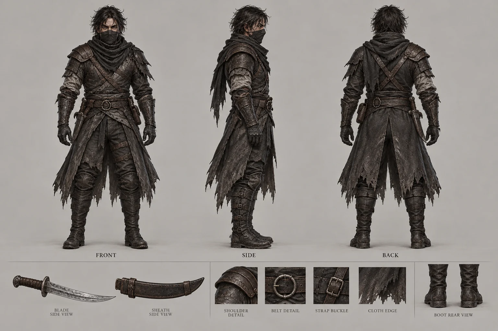
服裝、材質、三視固定項與配件規格
一般影兵（enemy-shadow）
主參考：assets/characters/enemies/enemy-shadow.webp。
既有觀察：亂深褐短髮、黑布遮住鼻口、輕便褐黑皮衣，細窄輪廓。
衣著分層／材質：深灰布上衣、褐皮小肩甲、黑圍巾、皮護臂、腰帶與開衩衣襬。
武器配件：短彎刃與腰邊小鞘，不持凜的獨特紫披肩。
正側背固定項：正：面罩與短刃；側：低肩甲輪廓；背：面罩束帶、衣襬開衩與鞘。
補設計／界線：背面新補素布，不追加刺客組織徽記或魔法眼。
15 影兵
色票：布 #303430、皮 #493F34、巾 #242B27、鐵 #67736E、髮 #332B24。薄內衣 → 褐皮短背心 → 低肩片 → 黑面巾；背中兩片皮革接縫，開衩到髖下，不加紫兜帽。面巾繫帶同高度繞頭，尾0.035H；小肩片不高於頸。彎刃含柄0.24H、鞘0.20H，腰後側向D配置；腰包0.06H×0.05H。眼睛正常暗色，無魔法光眼，不借凜晶化手或首腦編髮。
晶狼
犬科四足，毛皮与晶簇分層。
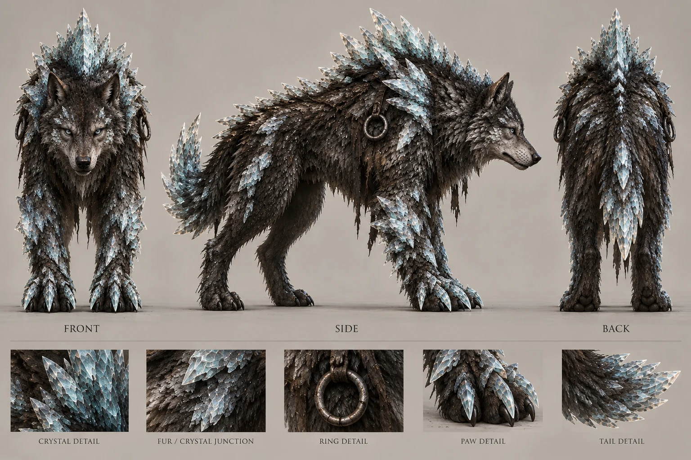
服裝、材質、三視固定項與配件規格
晶狼（crystal-wolf）
主參考：assets/characters/enemies/crystal-wolf.webp。
既有觀察：四足犬科、長吻尖耳、黑褐毛，肩背和前肢有青白晶體，犬齒外露。
衣著分層／材質：毛皮作主體，晶體半透明、乳白邊緣、暗青內部；腹部仍保留毛。
武器配件：前爪晶化而仍有爪趾；無人造鎧甲。
正側背固定項：正：長吻雙耳和前腿間距；側：犬科胸腹曲線與尾長；背：晶簇從頸背到肩胛的连续方向。
補設計／界線：另一側晶簇和尾根分布補設計；固定生長地圖，三面不可改成三種怪。
16 晶狼
色票：毛 #514B41、腹毛 #8E8A79、鼻爪 #2B3330、晶暗芯 #46787D、晶亮面 #AEDCDF。四足自然站立，L約1.65W，尾0.75W；數值為D，不改犬科關節。無衣物；毛層 → 肩胛/頸背侵蝕皮層 → 晶簇。頸背主簇高0.30W，前臂簇0.18W，腹面保留毛，爪趾可辨。背視可稍抬相機只供翼狀晶分布附圖，主背面仍水平；固定左肩3主簇、右肩2主簇為D分布，不能各面對称翻轉。
晶鼠
圓耳、長鬚、裸尾，保持鼠科輪廓。
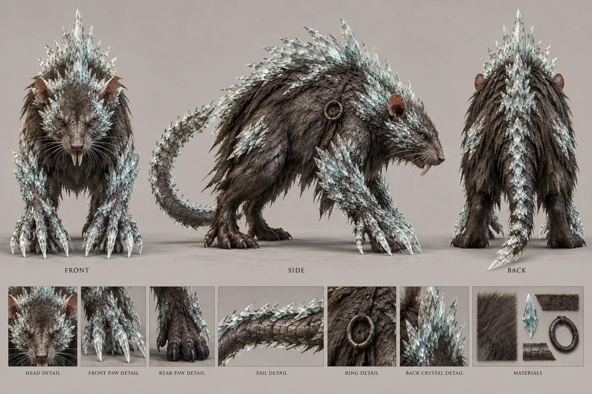
服裝、材質、三視固定項與配件規格
水晶鼠（crystal-rat）
主參考：assets/characters/enemies/crystal-rat.webp。
既有觀察：鼠科圓耳、長鬚與裸長尾；現圖晶化前爪巨大、軀幹低伏，須保留鼠而非狼辨識。
衣著分層／材質：灰褐短毛與半透明青白晶簇，尾部有鱗狀皮膚質感。
武器配件：門齒、鬚、長尾是辨識配件，不穿衣、不加金屬。
正側背固定項：正：圓耳、門齒與鬚；側：低身、長尾与背弓；背：尾根、兩耳位置和背晶分布。
補設計／界線：背面晶簇延伸新補，應留出可辨尾根，不用晶石完全包成球。
17 晶鼠
色票：短毛 #6E695F、腹 #A19B8D、耳尾 #927C6C、晶芯 #547F83、晶亮 #B0DADF。L約2.0W，裸尾1.1L，圓耳直徑0.30W；低伏鼠體不可拉成犬胸。無衣物；皮毛與晶化層直接相接，背弓留可辨毛帶。主前爪晶簇0.45W，背簇0.28W，尾根不得全被晶體吞掉；尾部鱗紋越向尖越細。門齒、鬚、圓耳為三視身份檢查点，不加狼犬齒。
冥淵晶爪
暮晶侵蝕的人類；破布與肉身仍可辨。

服裝、材質、三視固定項與配件規格
冥淵｜晶爪（暮晶侵蝕人類）（abyss-claw）
主參考：assets/characters/enemies/enemy-abyss-claw.webp。
既有觀察：偏瘦人形、灰白臉、暗亂髮、前臂巨大青色晶爪，肩背碎晶。
衣著分層／材質：殘破黑灰布、局部黑硬皮、青白晶體；不能畫成精製甲冑。
武器配件：長晶爪是肢體變異，不是可卸手套；保留原人形肘關節。
正側背固定項：正：瘦身、臉與雙臂晶爪比例；側：爪的前曲、肘位置；背：肩胛晶刺和布片破口。
補設計／界線：背刺分布及非主視手臂細節新補；左右不對稱必須三面一致。
18 冥淵晶爪
色票：皮灰 #848D85、殘布 #313A35、暗硬皮 #414D47、晶芯 #3E777A、晶面 #A9D9D7。人體殘餘 → 破布 → 穿出晶體，不是穿上一套精製晶甲。瘦肩髖骨架沿V；前臂含晶爪延長段約0.28H，肘仍可辨。背布留下中段垂片，肩胛主簇各2–3根D，右側較長但不換側。手指原關節到晶爪逐漸變形，晶爪不能像可摘手套有規整袖口。無獨立劍盾、腰包或徽章。
冥淵晶軀
厚重晶化人形；不是天然石像種族。

服裝、材質、三視固定項與配件規格
冥淵｜晶軀（暮晶侵蝕人類）（abyss-body）
主參考：assets/characters/enemies/enemy-abyss-body.webp。
既有觀察：巨大厚重人形、肩胸晶簇、低頭小臉、臂部如晶盾，腿短而承重。
衣著分層／材質：岩石與青白晶體大塊交錯，腰部殘破深色布；不使用肌肉皮膚光澤替代晶面。
武器配件：拳臂作武器；無獨立劍盾。
正側背固定項：正：肩胸寬比、巨臂；側：胸腹前後厚度与承重脚；背：晶體板塊如何接脊柱。
補設計／界線：背面晶板與腳掌底面補設計；與晶爪共享材質，不共享纖細骨架。
19 冥淵晶軀
色票：岩皮 #566C65、暗縫 #293E39、殘布 #323831、晶芯 #467B79、晶亮 #ABD7D1。厚重人形輪廓，肩寬約0.62H、前臂厚0.16H為D；腿承重，不畫成細腳平衡球。原肉身與晶板交錯，腰殘布在晶板下被撐裂，背面保留零星布邊可見來源。背脊主板5個高低不同單元，肩峰主簇0.18H；晶面連至臂但肘留活動縫。拳臂為身體，不增可卸大盾；小臉仍有曾為人的痕跡，不改無頭石巨人。
實驗獅鷲
鷹首獅軀四肢、半數羽毛晶化、頸部斷鐵鍊。
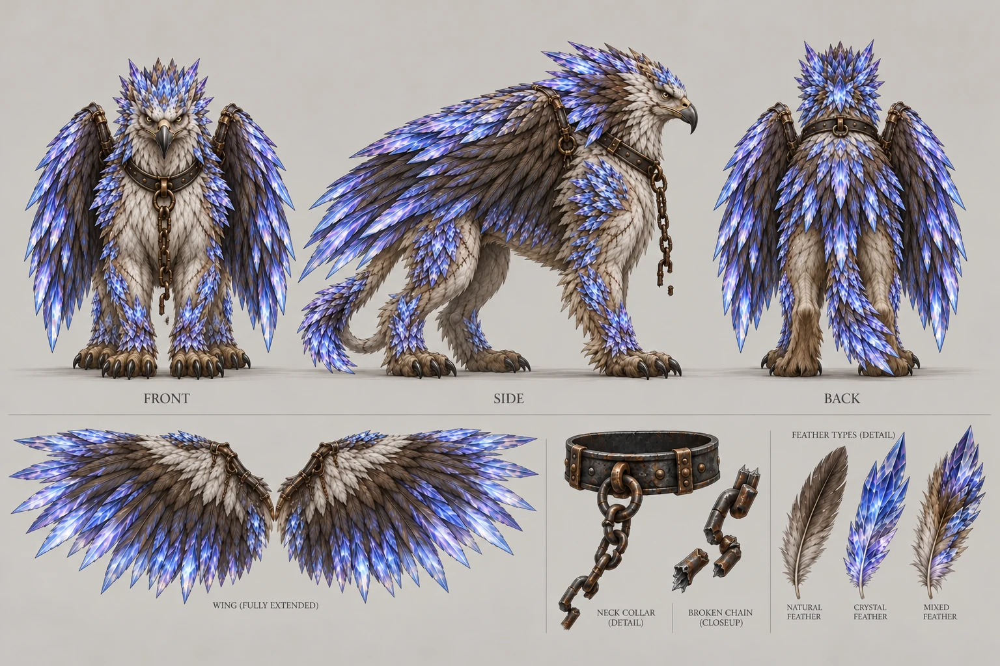
服裝、材質、三視固定項與配件規格
晶化獅鷲（griffin）
主參考：assets/story/actors/extra/enemy-griffin.webp。
既有觀察：鷹頭喙、展翅、獅獸軀幹與尾、四肢爪；白灰羽毛中穿插紫藍晶刺；canon明示半數羽毛晶化，整體應保留羽/晶兩種結構。
衣著分層／材質：白灰羽、暖灰褐獸毛、黃褐喙爪、藍紫半透明晶體。羽毛排列不能被晶片全部抹除。
武器配件：翅膀與爪作身體武器；無騎具；canon明示頸部斷鐵鍊，必須補上可辨的斷鏈，不能因立繪不清楚而刪除。
正側背固定項：正：喙、雙翅對稱骨點、前肢；側：頭頸到胸、翼根、尾彎；背：雙翼羽序、脊背晶脊与尾根。
補設計／界線：收翼側面、背部晶脊完整分布新補；另加展翼小圖，三視本體統一收翼或半展以免讀不出身長。
20 晶化獅鷲
色票：羽白 #D4D6CB、羽灰 #8E9D9B、獸毛 #81745D、喙爪 #B49A63、晶藍紫 #777AA9；晶亮 #B3C8DD、鏈鐵 #626964。L約1.8W，尾0.85L、全展B約3.6W為D，翼根接肩帶骨架，不長在腰。三視用半收翼以露身體，另附全展翼框；兩面共享羽序，約半數羽毛晶化為C，不能全變裸晶翅。頸鐵圈內徑留羽厚，斷鏈可見段0.35W、鏈環長0.08W，至少一端明顯斷口；無騎具。背面晶脊沿胸背到尾根漸短，留羽/毛過渡；鷹喙、獅軀、獸尾與四肢在三面均辨識。
8類匿名配角共用服裝模板
這些是場景人口模板，不是新具名角色；除替代詠唱祭司必交獨立三視圖外，其餘不要求每名路人另出三視图。共用一張服裝/剪影板即可，僅關鍵鏡頭補動作與背面一致性。臉均D，不宣稱某張新臉為未揭露的親人。
| 類別 | 模板與色票D | 連續性限制C |
|---|---|---|
| 蘭維爾母親 | 灰褐工作裙 #857763、米灰內衣 #C0B59D、舊圍裙 #685C49；背腰繫帶，袖可捲，平底鞋 | 同一救援連段同衣同臉；疲憊姿態，不加贵族飾品 |
| 蘭維爾女孩 | 淡土黃短外衣 #BAA478、褐褲 #76664C；低雙布扣、兒童鞋 | 非磷；不用磷黃圍巾＋灰藍衣整套識別 |
| 年輕格蘭隊長 | 刀兵同工藝薄甲、暗綠肩布 #51604A、皮帶；一條簡單指揮臂帶D | 非成年格蘭，非自動馬德爾 |
| 接應隊員/一般士兵團 | 刀兵基底、灰鋼 #89918B、暗褐衣；腰帶及手套適合抓背帶 | 同鏡頭接應手接到同一人的臂，不畫浮手；無須個別命名 |
| 替代詠唱祭司 | 米白長袍 #CFC6AF、灰綠披帶 #667364、素圓扣 | 非納爾瓦；不共用其特徵紅髮鬍或專屬臉 |
| 暮晶女孩聲音 | 僅聲音時無肉身；若概念示意用無身份剪影、舊灰布衣 #9C9988 | 未證明身份，不畫成磷、蘭維爾女孩或其母親；不補能力 |
| 王室研究人員 | 米灰工作衣 #BAB5A5、深灰圍裙 #5C625C、皮工具帶；背交叉围裙帶連腰 | 不複製赫爾曼銀髮眼鏡或伊芙紅髮識別；不自創新科技 |
| 居民/難民/商隊 | 同一粗布系：土褐 #86775F、灰綠 #79816A、褪藍 #6E8085；包袱/披肩按鏡頭 | 身形年齡分布自然；物品數量連續，不將群像全部畫成武裝士兵 |
道具交接檢查表
- 木書籤：朔刻製 → 納爾瓦保存 → P3交磷 → 朔辨刀痕。是一件傳承物；文字未要求它永久掛頸或全程在外。
- 銃：赫爾曼未完成實驗銃與E3伊芙組成銃共用W-PISTOL模型，分完成度狀態；H2伊芙成品銃轉交凜。新圖不能同時複製兩把。凜右臂失能不影響左手持銃位置。
- 格蘭盾：前傳盾插地/耗損/裂毀與成年礦坑裂盾分兩條事件，不把成年盾稱為當年原件。命令筒只在成年主線使用。
- 標誌：凜A1完整位置 → A3同位置割除痕；不以新徽記填空。
- 樣本與頭晶：伊芙H2結尾样本變炭；路易斯倒下額晶暗去；兩者不要以通用發光圖層常亮。
- 納爾瓦調查記錄與錄音機是可攜物，不是身體固定部件；磷不因抱著資料就新增暮晶共振器。
武器與裝置獨立設計板
使用者明確要求完整武器視覺設定。每件武器須正面、固定右側、背面/反面與握持示意；小件可加剖面，但剖面只是結構表意D，不建立新能量規則。武器板與角色板用同一物件ID，不各生成一件似是而非的替代品。比例以相應持有人H為設計參照，成品交到另一角色手中時絕不按新持有人重新縮放。
武器、硬幣與頭戴裝置
一款模型、跨角色與年代沿用。博士的原型僅完成度不同；伊芙交給凜之後，同一把槍不再出現在伊芙手中。


唯一款短銃
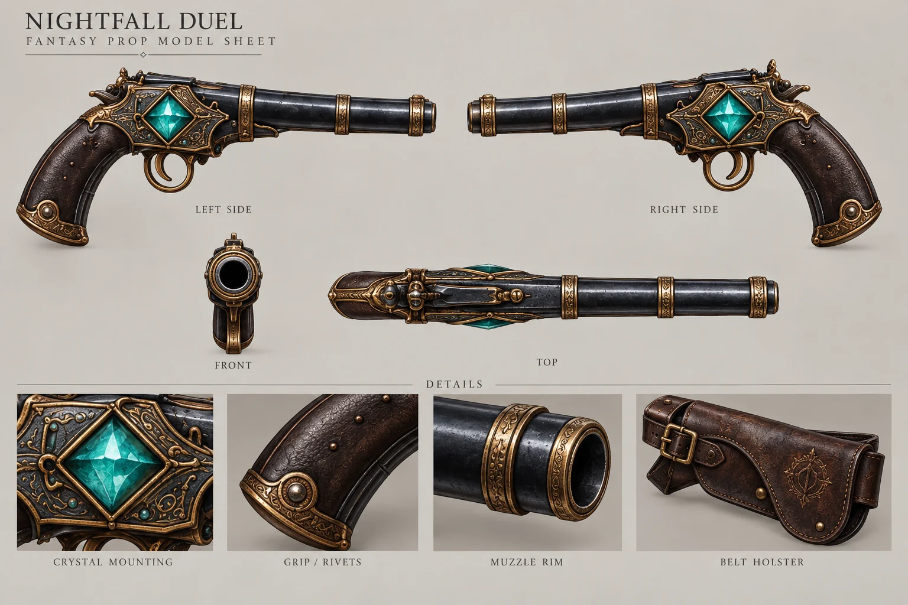
同款鎖定、材質、尺寸與狀態規格
W-PISTOL：唯一同款短銃與完成度狀態
使用者指定唯一主圖：storage/source-art/CHARACTER-BIBLE-20261011/user-references/gunner-pistol.png。已目視：單根黑色圓槍管、古金箍與裝飾框、側面大型菱形青晶、深褐彎握把、古金扳機護圈；依原圖維持整體槍管/機匣/握把長度比例。伊芙、一般槍手、赫爾曼未完成銃與H2交給凜的銃全部共享W-PISTOL，不能為角色另做素面軍銃、加長實驗銃或精工專屬款。舊gun-unify與新主圖衝突者列待修，不反過來覆蓋使用者主圖。
- 完成品狀態：伊芙與一般槍手同基礎槍，不按身份換外輪廓/裝飾/晶形。D尺度以全長0.23H作排版起點，確定主板後固定實物尺寸；內部比例照用戶圖而非舊短管比例。C伊芙E3組槍、H2轉交凜；借槍仍同一件，左手使用為凜H2明示。
- 未完成狀態：赫爾曼同款同尺寸同輪廓，只能標示局部未裝妥/未固定等完成度差別；不得更長槍管、換晶體位置、改柄或改成第三種銃。具體開放接縫為D輔助框，不發明新機關。C事故反噬仍保留。
- 交接與磨耗狀態：一般兵可有磨痕、赫爾曼可有試作痕，伊芙/凜依同件使用連續磨耗；這些不變更槍型。所有板共用同一主輪廓/箍數/菱晶與護圈。無新增彈種、射速、彈匣或魔法功能。
只做一套基礎正側背主板，加完成/未完成/交接狀態小框，不能再以三款銃差異為交付目標。D補色黑鐵 #303A39、舊銅 #A07D4B、柄 #59402E、青晶 #7DC8CB，以用戶圖可見材質優先。未見反面沿同結構補足，不能另一面忽然長出轉輪。
博士未完成短銃
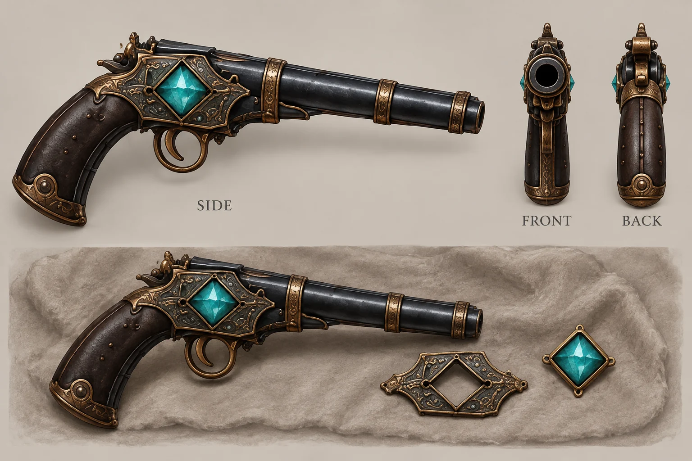
同款鎖定、材質、尺寸與狀態規格
W-PISTOL：唯一同款短銃與完成度狀態
使用者指定唯一主圖：storage/source-art/CHARACTER-BIBLE-20261011/user-references/gunner-pistol.png。已目視：單根黑色圓槍管、古金箍與裝飾框、側面大型菱形青晶、深褐彎握把、古金扳機護圈；依原圖維持整體槍管/機匣/握把長度比例。伊芙、一般槍手、赫爾曼未完成銃與H2交給凜的銃全部共享W-PISTOL，不能為角色另做素面軍銃、加長實驗銃或精工專屬款。舊gun-unify與新主圖衝突者列待修，不反過來覆蓋使用者主圖。
- 完成品狀態：伊芙與一般槍手同基礎槍，不按身份換外輪廓/裝飾/晶形。D尺度以全長0.23H作排版起點，確定主板後固定實物尺寸；內部比例照用戶圖而非舊短管比例。C伊芙E3組槍、H2轉交凜；借槍仍同一件，左手使用為凜H2明示。
- 未完成狀態：赫爾曼同款同尺寸同輪廓，只能標示局部未裝妥/未固定等完成度差別；不得更長槍管、換晶體位置、改柄或改成第三種銃。具體開放接縫為D輔助框，不發明新機關。C事故反噬仍保留。
- 交接與磨耗狀態：一般兵可有磨痕、赫爾曼可有試作痕，伊芙/凜依同件使用連續磨耗；這些不變更槍型。所有板共用同一主輪廓/箍數/菱晶與護圈。無新增彈種、射速、彈匣或魔法功能。
只做一套基礎正側背主板，加完成/未完成/交接狀態小框，不能再以三款銃差異為交付目標。D補色黑鐵 #303A39、舊銅 #A07D4B、柄 #59402E、青晶 #7DC8CB，以用戶圖可見材質優先。未見反面沿同結構補足，不能另一面忽然長出轉輪。
刺客短刀、鞘與硬幣
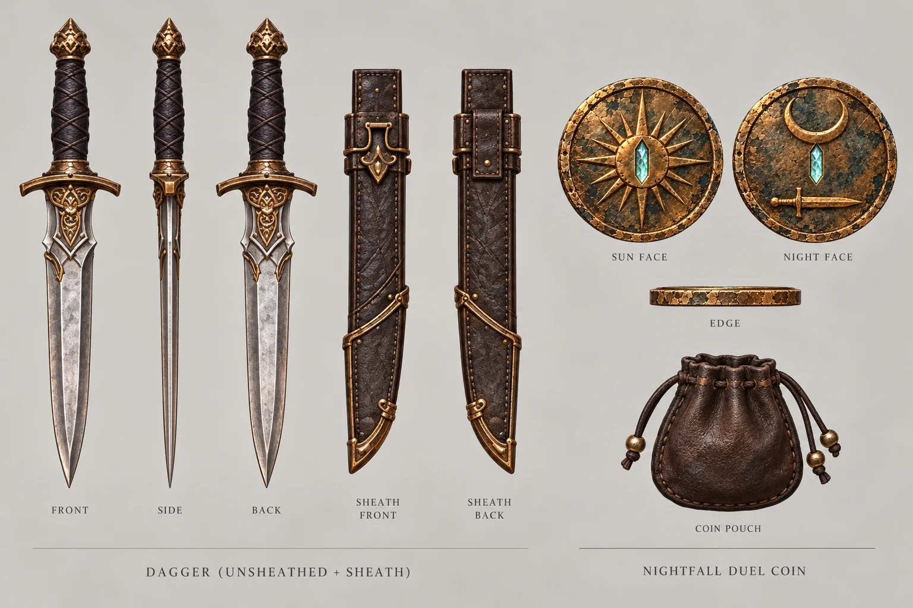
同款鎖定、材質、尺寸與狀態規格
W-RIN-BLADE／W-RIN-BORROWED：短刃與借來的銃
使用者指定唯一主圖：storage/source-art/CHARACTER-BIBLE-20261011/user-references/assassin-dagger.png。已目視：銀灰對稱收尖短刀、中央脊線、根部金飾、古金弧護手、黑色交叉纏柄、金飾柄首；配套深褐皮鞘有金邊、斜向飾線與固定扣。這些可見結構優先於舊原稿或本文件舊提案，禁止換成單刃彎刀/素刀。D全長暫以0.22H排版，柄刃比例直接追主圖，不用舊0.075H柄長扭曲參考。背面未見部分補對稱中脊與同款扣具，側厚約0.003H僅為製作建議。所有凜年代、卡面、情境共享同一刀鞘；磨耗改變不換款。正常持刃手非C，標「握持位置為製作示意」。
借銃不是新武器造型：直接引用W-PISTOL同一槍ID與尺寸。C：H2伊芙交給凜、凜從後背以左手抽銃；右臂晶化，夜襲末段右手撐銅管。三視需畫左手可及的腰後皮套固定點D，不能左右鏡像換傷臂。手指示意標出食指沿護圈外的靜止姿態、握把與掌根接觸，不為三視擺開槍動作；劇情射擊框再依原場景。
W-RIN-COIN：凜的核心隨身硬幣
使用者本輪明確補定：硬幣列為凜核心隨身道具，角色常態設定板與獨立道具板都需出現。這不表示在每個早期情境鏡頭都必須拿在手中，也不增補她何時得到硬幣的身世情節。
C與實際引用：src/js/story-chapters.js H2正文明示從口袋取硬幣、一面太陽一面夜襲、中間小片暮晶、彈上半空；太陽支線以銃擊中半空硬幣，夜襲支線硬幣滾到腳邊未撿。文字未指定取幣/拋幣是哪手，也未描寫接住，因此不能將固定左拋或接幣動作標為既有canon。src/js/story-campaign.js:489 H2真正使用 assets/story/props/chapter-props/h2-coin-sun.webp 與 h2-coin-night.webp。
V核圖結果：已目視 assets/coins/sun.webp、moon.webp 及上述兩張H2道具。通用sun/moon是金色細齒框、深綠琺瑯底；sun為放射太陽，moon為弦月加星，沒有可辨中央暮晶。H2專用sun是舊銅太陽放射紋與中央直立青晶；night是上弦月、中央青晶、下方橫短劍。凜道具以H2專用兩面為主，不把通用moon圖直接當有中央暮晶的夜襲面。通用圖可參考金屬/綠底工藝，不能取代H2身份紋樣。
D尺寸與結構：直徑0.027H、厚0.0025H；以手指可夾的一枚實物為比例，不畫盤子大小。舊銅 #A58547、磨亮金 #D4B86D、氧化暗綠 #344A40、晶芯 #69ACB2、晶亮 #C1E4D5。幣緣採細齒與不規則磨痕，但兩面同一個凹缺位置可以透過翻面對應。中央晶片長約幣徑0.30、寬0.09，以兩面對位的同一嵌晶結構示意，不能正面青晶、背面換成紅寶石。日面放射紋與夜面月/短劍依H2素材，所有文字另排，不新增可讀咒文。
D收納：腰帶左前內側扁小袋，約0.04H見方，袋口斜向左手；袋蓋單扣，內分一格防止硬幣掉入褲腳。C只說口袋，精確左前位置是本次新增。正側背各指出袋帶接腰帶的位置；披肩覆住時用局部透視分解框，不在整身圖畫穿透皮革的幣。H2左手需要稍後抽銃，袋與腰後銃套間保留不同取物路徑。
D動作小框：左手拇指與食指捏幣邊取出 → 硬幣置拇指背/食指支點 → 拇指向上彈，掌心向內、其他指自然放鬆；用左手是避免讓晶化右手同時做精細動作的製作選擇，不是故事明示慣用手。另附中立「接幣練習」框可用同手掌接/指夾，必標非H2既有鏡頭；H2太陽劇情不能接住半空硬幣，夜襲劇情不能擅補撿幣。保持右臂晶化在角色右側，為了露幣面不得鏡像整張人物。
獨立板交付：日面、夜面、側緣、嵌晶放大、收納小袋、取出/拋幣手勢；與W-PISTOL借銃同尺度對比框。角色常態板列「持有硬幣」配件，不將H2的發光或破裂效果提前到A1。硬幣破裂是太陽分支事件，破片板不能替代完整核心道具。
劍客唯一款長劍與鞘
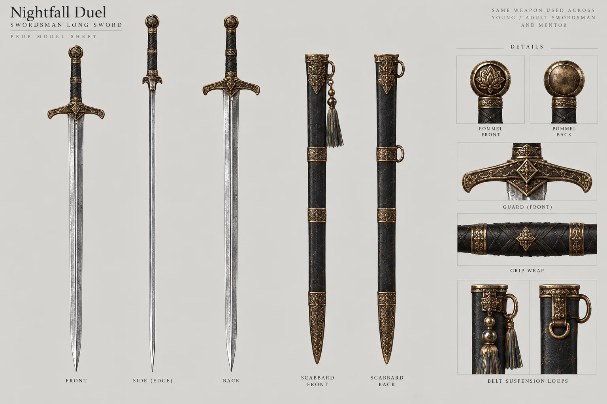
同款鎖定、材質、尺寸與狀態規格
W-SWORD：唯一同款長劍與鞘
使用者最新指定劍客武器只有同款。朔年輕、成年、受傷、卡面、情境共享W-SWORD；伊藤也不另定一種師父專屬劍輪廓。刃形、護手、柄長、纏繩、鞘端與配色全部由同一主板複用。D製作尺寸保留含柄0.56H、柄0.11H、護手寬0.065H作主板初始比例，固定成物件後換持有人不重新縮放。色票統一刃面 #B9C0B6、護手 #9A7E50、深褐柄繩 #4B4233、木鞘 #3D4639；不再按師徒分金/鐵護手或不同雕花。原圖衝突是待修資產，不可成為再開新款的理由。
正面顯刃/刃背、側面顯厚度，背面顯柄繩結與鞘吊環；刃寬最大0.023H、厚約0.003H為D。鞘用同款雙窄吊帶；左腰懸掛為D，不聲稱慣右手。劍出鞘時鞘仍在腰上，不能連鞘一起變第二把刀；朔S3伤手左右未明，不擅加右手受傷標記。磨耗可依人物/年代不同，但不可改款。
坦克唯一款錘
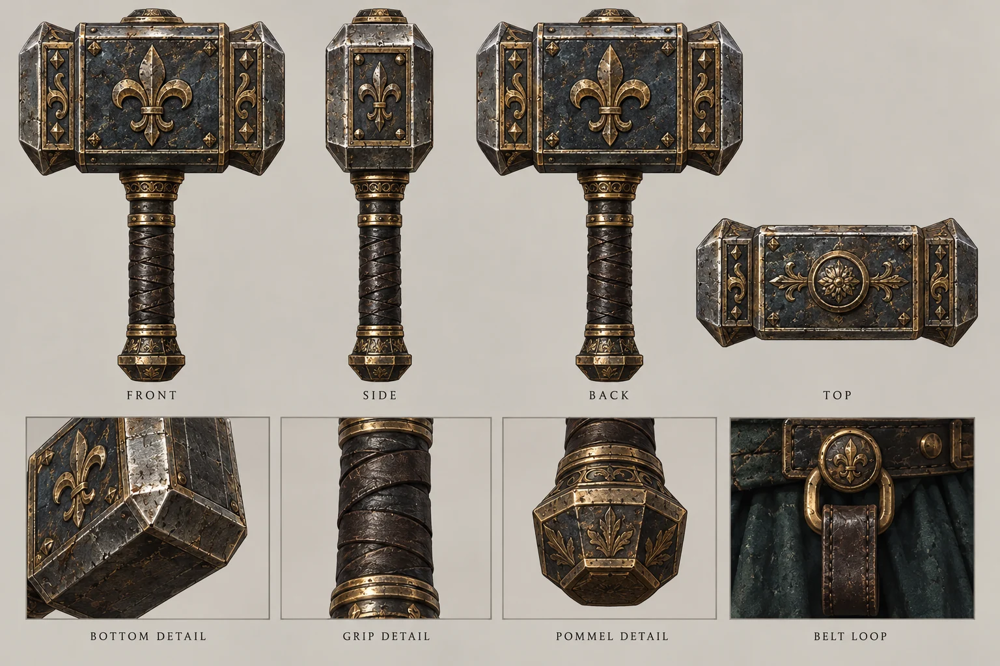
同款鎖定、材質、尺寸與狀態規格
W-GRAN-HAMMER：格蘭唯一款錘
使用者最新明定坦克武器是錘子，只有唯一款。格蘭年輕、成年、卡面、情境與小遊戲皆配W-GRAN-HAMMER＋W-GRAN-SHIELD；刪除格蘭腰間長劍/劍鞘的製作方向。武器只在適合動作的鏡頭露出，撐盾救援時可收納，但不因此變成空手職業或另一款錘。
錘造型目前沒有用戶單獨圖片，以下均D、不是既有故事明示：單柄錘，全長0.30H、錘頭橫寬0.13H、厚0.065H，雙面平擊面、四角鈍切，古銅外箍 #9A744A、深鋼擊面 #647675、褐革纏柄 #5B4737、細青綠柄結 #355E59。一旦主板確立，換年代不重縮尺寸、不換頭形、不加刃/尖刺/槍口。無新增能力。
獨立正/側/背三視須固定錘頭左右平擊面、套箍、柄穿頭的軸線、纏柄交疊与柄尾。腰後右側一個承錘頭皮環與下方柄穩定帶為D收納；不要將錘像劍插入長劍鞘。右側收納不代表故事已確認慣用手；與盾握持配置一起記錄，同一鏡頭序列不可任意翻轉。磨耗可增加，但頭面尺寸、裝飾與柄長不變。
身份分離：一般盾兵另用W-ENEMY-SHIELD-HAMMER，其原圖為較素的稜角短柄錘，約0.25H；它不是格蘭的主武器替身。不能因二者都持盾錘便交換資產、用同名檔覆蓋，或給盾兵格蘭的青綠金紋盾。
坦克同款救援盾
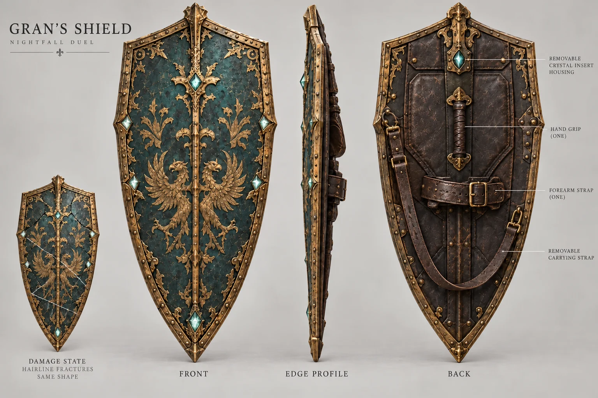
同款鎖定、材質、尺寸與狀態規格
W-GRAN-SHIELD：同款救援盾與年代損耗
C：新兵盾含暮晶片、可插地、承壓耗損開裂；成年礦坑後盾裂。V：青綠盾面、古金裝飾、上寬下收輪廓。D：高0.57H、寬0.30H、弧深0.04H；盾面青綠 #355E59、框 #9A744A、盾背 #4C5146、握帶 #624A35。正視看框/盾面/晶片接縫；側視看弧面與下端鈍楔地腳，楔端延伸不超0.035H；背視必見前臂帶、直握把、可拆背帶及晶片插槽。插槽位盾背上三分之一，蓋片鉸接與手掌不重疊；暮晶是既有救援機構，不加炮口或新攻擊模式。
使用者最新指定：年輕、成年、卡面、情境與小遊戲使用同一設計，外輪廓、盾面金紋、框色、握把、臂帶、背帶、晶插槽、插地端不得因年代更換款式。不同年代可以換成同型新實物，磨耗依事件累積。D裂位固定圖：以盾自身正面觀看，主裂由上緣右側四分之一處斜向中央晶槽，再延至下緣左側四分之一；背面必為同一道穿透裂縫的反面，不另長新裂。事件前完整、受壓細裂、事件後擴裂分三狀態；這是統一破損製作圖，不宣稱歷史原稿已有精確裂線。D握持可用左前臂穿帶、左手握把，標明非故事慣用手；情境已有另一側時不可鏡像整個人物。背帶上肩時拆握帶不增加新機關。
國王頭戴式控制裝置
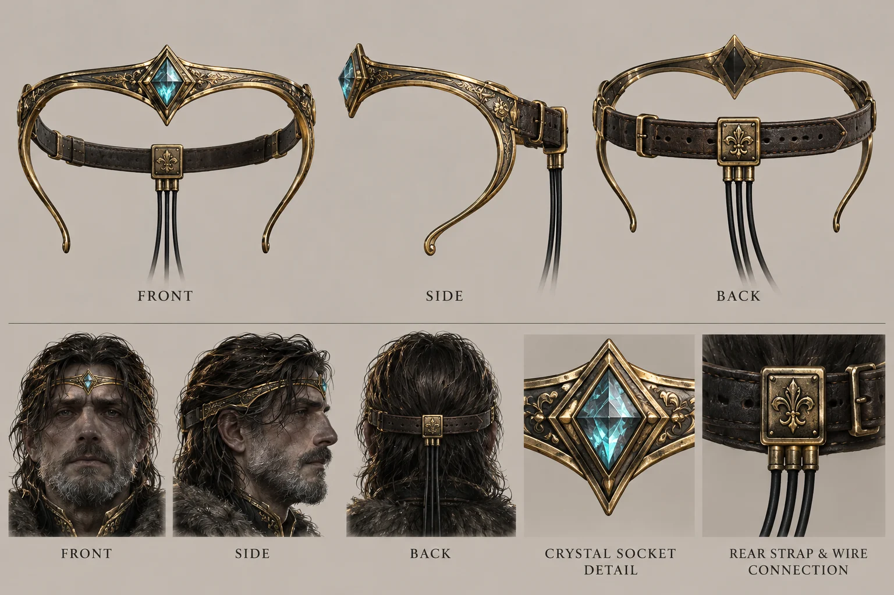
同款鎖定、材質、尺寸與狀態規格
W-LOUIS-CONTROLLER：暮鐘控制頭裝
C額前暮晶頭戴裝置，連結暮鐘、路易斯倒下時暗去；不是把一般王冠當替代物。D低金屬額箍 #9C814D 寬0.015H、額晶0.035H、晶固定座0.05H，晶青 #89C8CA。正面一枚額晶及左右固定座；側面薄臂沿太陽穴到耳後；背面低後箍/調節扣藏髮下但可拆解看，不畫穿進頭顱的針或新增植入設定。髮與裝置分層，金屬臂接點在三面同高。
發光/熄滅各一小框，熄滅晶材 #455957 仍有玻璃表面而非消失。晶化路易斯的大身體晶簇另屬狀態，不讓頭裝隨變身換成全新王冠。佩劍沿路易斯角色規格附小件三視，避免只畫頭装漏武器。
一般敵人裝備
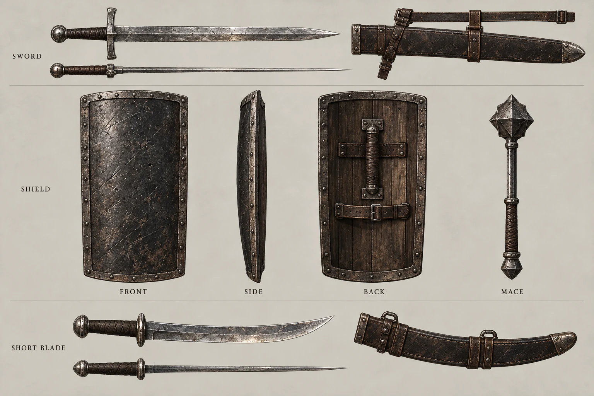
同款鎖定、材質、尺寸與狀態規格
W-ENEMY-SHIELD／W-ENEMY-BLADE／W-SHADOW
盾衛素盾D高0.60H、寬0.29H、深0.035H，正面深鋼 #606C6D，框 #354245，背皮帶 #514431；正面無格蘭金紋，側面厚框，背面雙臂帶與直握把，護手空間要足。美術大圖複核V：盾衛持有稜角錘頭短柄錘，並非短劍。D錘全長0.25H、錘頭寬0.09H、厚0.045H，錘頭深鋼、柄褐革；正反面的錘頭斜切角相同，側面顯固定錘頭的套箍。盾與短柄錘同板交付，不能沿用早期文字誤認的側腰短劍。
刀兵長劍D含柄0.50H、護手0.075H，鐵灰 #A2ADA5、皮柄 #594735，左右對稱的普通護手、素鞘；工藝簡於師徒劍。影兵彎短刃D含柄0.24H、深鐵 #697870、素黑褐柄 #3A342B，曲線只一側，不模仿凜古銅飾。三者左腰/腰後掛點屬D，非慣用手canon；佩戴示意各用無身份剪影，不借主角臉。
完整製作文件
以下將三份原始文件完整收錄，可直接展開查阅。狀態矩陣、8 類匿名配角模板、色票、衣物比例與武器細部皆保留。
畫師製作細則、狀態矩陣與全部武器規格
CHARACTER-BIBLE-20261011｜畫師製作細則與狀態矩陣
日期：2026-10-11。涵蓋11人物身份與9敵人身份。與 CHARACTER-BIBLE-20261011-canon.md、CHARACTER-BIBLE-20261011-art-spec.md 配套使用。本文件不更改故事、裝備能力、戰鬥或runtime引用。
最新使用者武器定稿優先
槍僅W-PISTOL一款（用戶gunner-pistol.png）；凜刀僅W-RIN-BLADE一款（assassin-dagger.png）；劍客長劍/鞘僅W-SWORD一款；格蘭武器僅W-GRAN-HAMMER唯一款錘，盾僅W-GRAN-SHIELD同款。角色、年代、卡面、情境不得另開款式。舊圖與文字衝突列待修；未完成、磨耗與破損只是同款狀態。使用者圖的可見比例優先所有D數值。
資料標記與尺寸方法
C（故事明示）：姓名、年代先後、右手灼傷、道具交接等以canon來源為準。V（既有原畫觀察）：臉、髮、服裝大輪廓沿art-spec與本地參考圖。D（本次補設計）：下文所有Hex色票、衣物背面裁片、扣具數量、相對尺寸、配件掛法與未有原圖的馬德爾全套。D不是舊正史的考證結果；新圖驗收後可作後續製作標準。
人形以直立足底到頭頂為H，不含高髻、頭盔或晶刺；不據此推算公分或年齡。四足以肩高為W、鼻端到尾根為L；展翅用翼展B。此處比例為畫師可操作的設計目標，允許約5%繪製誤差；服裝與原圖辨識輪廓衝突時記錄差異；武器一律以最新使用者主圖與同款要求優先，不沿用衝突舊款。不是服裝實際裁縫尺寸。
Hex均為中性日光下的建議固有色，不是從原圖逐像素取樣；不得把情境青光當皮膚固有色。金屬另畫高光、氧化、磨邊，晶體保留透光與暗芯，不用一塊純色替代材質。
三視圖製作與圖面檢查
- 每套固定同一時刻、同一套衣服：全身正面、角色自己的右側面、背面。正面中角色右手位在觀者左側；背面右手位在觀者右側。側面不是鏡像正面。
- 中性灰底
#B5B0A6，柔和白光，無情境透視、景深、動作模糊、文字或UI。相同頭頂與足底基準，近正交，腳不裁切。嬰兒用同一襁褓姿態的三個方向，不硬站立。 - 中立放鬆姿態，手臂微離軀幹；盾與大槍移至旁邊配件框，身體不可整面被遮。晶化怪物以本身自然承重姿態，不為三視強行拉直。
- 三面逐項核對：髮線、髻根、鼻額、領口交疊、肩甲層數、扣具數量、腰帶穿袢、袋帶連接、後開衩、傷勢左右、鞋底厚度。背面不能多一件正面不存在的披風。
- 交付辅助框：臉部正側近看；手部正常/受傷/晶化；武器正側背；扣具、徽標/割除痕、鞋靴底面。狀態框用外部排版標註C/V/D，不能依賴生成中文字正確。
- 右臂晶化、王冠/頭戴控制器、斷鐵鍊屬高優先檢查點。晶簇先固定位置圖：正面與背面共用同一肩胛、肘、脊骨座標，不可每面各長一套。
- 不指定故事未確認的慣用手。下文鞘在左、袋在右等為D的裝配位置，只為連續性；持劍姿勢不是證明角色慣右手。唯一明確持銃左右要求為凜H2左手。
年代、手別與衣物狀態矩陣
| 身份/狀態ID | 時點與服裝 | 手部、道具、損傷 | 必須禁止的混用 |
|---|---|---|---|
| RIN-A1 | 任務前紫披肩、尺烏制服；標誌尚在 | 未受A2灼傷；一般持刃手別未定 | 晶化手臂、A3割標誌、伊芙短銃 |
| RIN-A2 | 同套制服；事故後 | C右手灼傷，之後纏繃帶 | 左手灼傷、已晶化整臉 |
| RIN-A3 | 同一張臉，制服標誌被割除 | C右手傷仍在；割除痕用磨損布底，不補新徽記 | 完整尺烏標誌重新出現 |
| RIN-AWAKENED | 覺醒原畫為視覺參照，對應H2公開右臂晶化時製作 | C右袖裂、繃帶散；右臂晶化，左臂保留 | 把原畫檔名當額外故事能力或新章節 |
| RIN-H2-SUN | H2太陽分支 | 左手從後背抽伊芙槍；右臂晶化；射向硬幣 | 晶化上臉並非本支文字必需，不套夜襲最終狀態 |
| RIN-H2-NIGHT | H2夜襲後段 | C晶化延至臉頰；右手撐銅管、左手瞄暮鐘核心 | 右手持銃、兩側臉任意翻換晶化區 |
| EVE-LAB | E1/E2、E3組槍前：米白研究外套 | 尚未組成完成槍；可持紙件 | 暗酒紅職業戰鬥服冒充研究所常服 |
| EVE-ARMED | E3組槍後至H2交槍前 | 完成短銃；逃離後大衣火損；信/設計圖收妥 | 舊長步槍、提前失去槍 |
| EVE-H2-EMPTY | H2撤離交槍後 | 空槍套；結尾暮晶樣本失光成黑炭 | 同一把槍仍在她手中；樣本繼續發光 |
| SHUO-YOUNG | S1–S3前傳米白袍、綠巾 | 送出書籤；劍鞘左腰為D | 成年黑袍、同時保管已送出的書籤 |
| SHUO-WOUNDED | S3後段同白袍 | C肩誓約繩斷、握劍手受傷；左右未明 | 虛構永久斷手或固定左/右為canon |
| SHUO-ADULT | 十年後深黑褐長袍 | 劍與鞘；認出磷書籤 | 選角白袍無條件覆蓋當代立繪 |
| GRAN-YOUNG | T1–T3新兵，銀灰甲、青綠巾 | 唯一款錘W-GRAN-HAMMER；救援盾暮晶片、背帶；T3盾裂後放開 | 成年古銅雕花重甲與濃鬍取代年輕版 |
| GRAN-ADULT | 主線古銅甲、青綠巾 | 同款錘W-GRAN-HAMMER；王室蠟印命令筒；礦坑苦撐後盾裂 | 年輕臉；將T1精確標成十年前 |
| NARVA-YOUNG | S前傳/P1年輕祭司 | 書籤收受；無固定武器 | 成年鬍鬚與舊黑髮受傷稿 |
| NARVA-ADULT | 十年後養父，紅棕髮鬍 | P3將書籤給磷；調查有錄音機 | 每场都持書籤、魔法杖 |
| NARVA-WOUNDED | 礦區同一套當代袍服 | 傷勢按當前受傷原畫；需止血 | 晶化、截肢或新能力 |
| ITO-PAST/NOW | 師父前傳/十年後；同臉骨架 | 劍；H2疲憊、單膝跪下後被救撤離 | 畫成年輕朔同齡、義肢 |
| LOUIS-CONTROL | H1國王、頭戴控制器、甲冑 | C額前暮晶、佩劍 | 用單純王冠取代控制裝置 |
| LOUIS-CRYSTAL | 戰鬥晶化階段 | 同一臉衣物上固定晶簇與破洞 | 全新怪物臉、不同王袍 |
| LOUIS-FALLEN | H1倒下/H2開場 | C額晶暗去 | H2繼續活著指揮 |
| PHOSPHOR-BABY | P1嬰兒、襁褓 | 無獨立武器/異能配件 | 成年臉縮小、當代黃圍巾 |
| PHOSPHOR-CHILD | 十年後孩子，灰藍衣、黃巾 | 一個包；P3後書籤 | 未來磷、成年身形、共振裝置 |
| HERMAN-LAB/GUN | 當代研究/事故實驗銃 | 未完成短實驗銃，事故後死亡 | 伊芙成品槍替代、主線活著同行 |
| BOSS-A1/A3 | 尺烏首腦交任務/死去 | 遮面與編髮；無新專屬武器；美術依據追溯A1現行boss.webp | 新取真名、以影兵替臉 |
| MADEL-NOW | 當代副手；整套D | 文件袋/束帶為D | 自動等同T前傳接應隊員 |
以上矩陣是製作狀態，不是每列都新增一整套衣服。共用基礎三視圖＋清楚的狀態覆層可減少互相矛盾；兩個年代的臉/衣不同者仍分套。
20身份細部製作表
下列色票、尺寸與未見背面均為D；每條開頭所列身份輪廓與材料沿V，年代/道具限制沿C。色票依序為主布、輔布、皮革/陰影、金屬、辨識色；不能因此替換原畫已明顯固定的髮色。
01 凜
色票：紫披肩 #49344F、炭灰內衣 #29282D、深褐皮 #493C34、舊銅 #9A7850、晶青 #8ACBCB；髮 #25201F。內衣交領 → 貼身皮甲 → 胸帶 → 分片小肩甲 → 紫披肩，外層不可穿到胸帶底下忽然消失。披肩背中長0.24H，帽根縫接後領，左右肩可活動；後背皮甲兩條縱縫，不新增家徽。腰帶寬0.025H，皮套懸掛點固定腰後偏左，以左手可抽為原則；短銃長按伊芙銃尺寸。短刃含柄0.22H，鞘口露腰帶下，鞘尖不穿裙片。前臂護具0.14H；晶化時右側護具破裂，非完整金屬包住晶體。割標誌區只畫布邊/縫孔，形狀依A1標誌所在處一一對位；既有原圖無可識別標誌時用獨立輔助框展示D標誌附片位置，不發明宗教/組織圖騰。夜襲臉晶化由右頸沿同側顴骨延伸為D分布，保留左眼與鼻口可識別。
02 朔
色票：前傳米白 #D6CDB7、巾綠 #405C50、成年外袍 #292A27、皮 #584637、銅 #9B7E51；髮 #24221F。前傳內衫 → 米白交領長袍 → 腰束 → 綠巾/肩甲；成年改深褐內袍與黑外袍，骨架不變。外袍下襬到腳踝上0.07H；背中縫從後領到襬，下0.24H開衩，內層在開衩可見。左腰鞘以兩個短吊帶固定腰帶，離髖0.025H；劍含柄0.56H，鞘略長刃部，非比整把劍長。髻高0.045H，背面見髮結固定繩；書籤0.08H×0.015H，不縫上胸口。斷誓約繩前後沿同一肩接點，傷手細節標左右尚未由C確立。
03 格蘭
色票：巾青綠 #355E59、年輕鋼 #9BABA9、成年銅 #9A744A、內襯 #343C3A、皮 #5B4737；年輕髮 #77573E、成年髮 #4D382B。內衣 → 鏈甲/襯墊 → 胸背板 → 腰帶 → 肩甲/青綠巾；金屬邊不直接割裸頸。胸甲側面用兩條短皮帶接背板；背板上肩胛一片、腰背一片，中間滑疊0.02H。成年肩甲每側3主層；新兵2主層為D統一目標，不能三視變層數。盾高0.57H、寬0.30H、弧深0.04H，厚邊0.015H；盾背一握把、一前臂皮帶及一可拆背帶，暮晶片插槽放盾背上三分之一避免手掌壓住。命令筒長0.14H、徑0.035H，掛腰右側，蠟印藏於筒蓋繩結；盾持哪手為D畫面配置，不宣稱慣用手。新兵與成年盾不能硬說是同一件未斷的實物；使用同一盾設計、各自破損時序。
04 伊芙・赫森
色票：研究衣 #D6CCB5、領巾 #783D39、皮背心 #594437、戰鬥酒紅 #593139、銅 #A47D4D；髮 #9C4E32、晶件 #7AC9CC。內衫 → 皮背心 → 紅領巾 → 米白外套，腰帶穿外套固定袢，紙件內袋不能讓袋口浮空。背單中縫、肩胛左右兩片裁片、腰節連後襬；後衩0.23H，袖口反折0.035H。短銃統一W-PISTOL，用戶圖優先；全長0.23H只是排版尺度，握把/槍管/菱晶比例照主圖，不生新炮管。腰側皮套口略高於扳機護圈，H2後空套保持外形。信袋0.12H×0.08H貼內胸，不把所有文件捧在外面。E3火損選外套下襬與袖緣為D固定位置，三面對位；戰鬥職業皮衣獨立板，不作時間軸換衣斷言。
05 磷
色票：外衣灰藍 #60717C、圍巾黃 #BDA454、內衣 #454847、袋皮 #735B41、鞋 #494136；髮 #302B28。兒童頭身比例沿原圖，不以成年人H等縮。內衫 → 寬袖外衣 → 黃圍巾 → 單斜袋；外衣背中一條縫，無成人收腰胸省。袋寬0.16H、高0.13H、厚0.035H，帶寬0.025H；背面必連至同一袋，袋底至髖下即可。圍巾寬0.065H、單側可見垂端0.22H，流蘇0.025H，避免勒頸或拖地。木書籤沿物件實際固定大小，不能因持有人變小而縮成另一枚。嬰兒襁褓用 #C9BFA9、內布 #E2D8C4，只露臉與少量頭髮，背面摺布可追溯，無鎧甲、晶體植入或武器。
06 納爾瓦
色票：袍白 #D6CEB9、披布綠 #36574B、束腰 #526D57、金邊 #A78B52、靴 #534638；髮 #8B5539。寬袖白袍 → 綠腰束 → 綠披肩，領圓扣徑0.035H；長垂帶寬0.07H、下垂至膝下。背披布由後領整片展開，金邊寬0.006H，僅沿既有邊紋，不加巨大新聖徽。袍襬距地0.04H、袖口闊0.08H，側縫留步行量。紀錄袋0.13H×0.10H掛腰，不作永久神聖器具；書籤交出後袋口可空。年輕乾淨下巴，成年鬍與疲態沿原圖；受傷按narva系列位置做同材質破口，絕不用黑髮舊版換頭。
07 赫爾曼
色票：長外套 #4B3B31、背心 #332E29、襯衣 #665849、金邊 #A18653、眼鏡 #B0A58C；髮 #C7C5BB。襯衣/領巾 → 多扣背心 → 長外套；背心5扣為D，扣距一致，外套不加重甲。背中縫、腰後收省兩條、下襬雙片開衩0.25H；領後翻面與正面厚度相同。眼鏡框高0.018H、鏡腳連到耳後；不畫漂浮鏡框。實驗短銃是W-PISTOL同款同尺寸的未完成狀態；只可局部未固定，不改用戶图槍管、菱晶、握把比例，不新增線圈。工具口袋寬0.06H位外套內，不必新增滿身藥瓶。
08 伊藤
色票：白袍 #D7CEB7、巾綠黑 #344B40、肩銅 #937347、皮 #574434、髮灰 #BCBAB0。師承與朔共享交領及束腰語彙，肩甲更寬；白內袍 → 腰束 → 綠披巾 → 銅肩甲，披巾不能穿透甲片。背面長髮落到上背0.18H，束繩固定髻根；肩甲背鉸接兩點，留頭頸轉動空間。劍含柄0.56H、左腰鞘吊帶為D，與朔同工藝不同磨耗。前傳減少白髮比例屬D，不宣稱確切歲數；當代額紋、髮白沿V。疲憊板只改姿態、灰塵與自然褶，不新增血淋傷口或義肢。
09 路易斯
色票：王袍 #263B32、斗篷 #252822、毛皮 #4A4437、古金 #A0844B、晶青 #89C8CA；髮鬍 #352C26。內袍 → 雕花胸甲 → 毛皮肩領 → 長斗篷；肩領厚0.045H，不能蓋掉頭戴控制器。背斗篷分中央大裁片與側褶，長至地上0.02H；胸甲側帶接背板。額晶直徑約0.035H，低金屬額箍寬0.015H，兩側連後頭調節帶，與髮分層；不是懸浮寶石。佩劍含柄0.55H，鞘腰側D。晶化先固定右肩大簇、胸兩側小簇、背脊一組為D分布，避開全遮面；衣破洞環繞穿出點，後背不得毫無破口。倒下後晶體顏色降至 #455957，無自主发光。
10 尺烏首腦
色票：主衣 #30322E、披巾 #355B51、皮 #554337、甲銅 #8E744E、面罩 #202723；髮 #49352B。黑灰長衣 → 腰帶/胸斜帶 → 小肩甲 → 青綠巾；編髮不與披肩混成布條。面罩後繫帶在枕骨下打平結，尾端0.04H；領口仍有呼吸空間。背中縫與兩側開衩，背腰小袋寬0.09H、厚0.025H；不加大型背劍。圓腰章徑0.035H，紋理模糊沿V、不另設新可讀徽記。袖口護腕0.12H，靴到小腿下三分之一。不能因蒙面將眼額改為影兵。
11 馬德爾
全套D：短深褐髮、少量灰鬢、寬鼻與短鬍，不附精確年齡。色票：橄欖外套 #586044、灰麻 #ACA18A、皮 #67503A、鐵 #74786E、文袋 #806344。灰衫 → 實用外套 → 斜肩文件帶 → 簡護腕；無格蘭同款大胸甲與披風。外套長至大腿中段，背中縫、肩胛水平育克與下0.12H小開衩；袖口雙扣，肩帶不穿袖籠。文件袋0.17H×0.12H×0.035H，左肩斜至右髖，袋蓋一扣；腰繩直徑0.007H、束成0.06H圈，僅普通繩。無固定武器，避免從造型新增戰鬥職能。此人不能替換前傳匿名隊員。
12 刀兵
色票：軍衣 #4D493E、內衣 #353B38、鋼 #818C87、皮 #594735、磨邊 #B0B5A8。布內衣 → 薄襯墊 → 小胸片/肩甲 → 腰帶；後背素背板三個主鉚接區，不飾主角紋章。肩甲2片，護腕0.13H，靴筒0.17H；衣襬後開衩0.16H。劍含柄0.50H，直護手寬0.075H，左腰鞘D。額髮與臉可做群眾小變化但制服版型不變；不因刀兵職稱擅定出身或善惡。
13 槍兵
色票：軍衣綠 #3D4C3E、帽 #746954、皮 #574533、銃黑 #303A39、銅 #9F7F4C；晶 #7ACBCD。立領內衣 → 軍外衣 → 斜帶 → 小肩護片；背面帶子連腰套，無無用途交叉線。帽簷伸0.035H、冠高0.04H；外衣後開衩0.16H，工具袋0.075H×0.06H。短銃共用W-PISTOL用戶圖；0.23H僅排版尺度，內部比例同主圖，不轉長步槍。銃套側腰以兩袢固定，背面能看到尾端；不新增彈藥類型、射速或魔法器官。
14 盾衛
色票：鋼 #606C6D、深鋼 #354245、內襯 #383A34、皮 #514431、磨邊 #9DA8A3。鏈襯 → 胸背甲 → 分片肩/腿甲 → 護頸盔；背板三段滑疊，後頸至少留0.02H活動縫。盔眼縫高0.008H，背面護頸3片；不露可辨主角臉。盾高0.60H、寬0.29H、深0.035H，素面厚框，背兩臂帶與直握把；原圖配有稜角錘頭短柄錘，錘全長0.25H、錘頭寬0.09H為D。盾與格蘭色紋絕不混用；其重裝身份不等於持盾手別已成故事canon。
15 影兵
色票：布 #303430、皮 #493F34、巾 #242B27、鐵 #67736E、髮 #332B24。薄內衣 → 褐皮短背心 → 低肩片 → 黑面巾；背中兩片皮革接縫，開衩到髖下，不加紫兜帽。面巾繫帶同高度繞頭，尾0.035H；小肩片不高於頸。彎刃含柄0.24H、鞘0.20H，腰後側向D配置；腰包0.06H×0.05H。眼睛正常暗色，無魔法光眼，不借凜晶化手或首腦編髮。
16 晶狼
色票：毛 #514B41、腹毛 #8E8A79、鼻爪 #2B3330、晶暗芯 #46787D、晶亮面 #AEDCDF。四足自然站立，L約1.65W，尾0.75W；數值為D，不改犬科關節。無衣物；毛層 → 肩胛/頸背侵蝕皮層 → 晶簇。頸背主簇高0.30W，前臂簇0.18W，腹面保留毛，爪趾可辨。背視可稍抬相機只供翼狀晶分布附圖，主背面仍水平；固定左肩3主簇、右肩2主簇為D分布，不能各面對称翻轉。
17 晶鼠
色票：短毛 #6E695F、腹 #A19B8D、耳尾 #927C6C、晶芯 #547F83、晶亮 #B0DADF。L約2.0W，裸尾1.1L，圓耳直徑0.30W；低伏鼠體不可拉成犬胸。無衣物；皮毛與晶化層直接相接，背弓留可辨毛帶。主前爪晶簇0.45W，背簇0.28W，尾根不得全被晶體吞掉；尾部鱗紋越向尖越細。門齒、鬚、圓耳為三視身份檢查点，不加狼犬齒。
18 冥淵晶爪
色票：皮灰 #848D85、殘布 #313A35、暗硬皮 #414D47、晶芯 #3E777A、晶面 #A9D9D7。人體殘餘 → 破布 → 穿出晶體，不是穿上一套精製晶甲。瘦肩髖骨架沿V；前臂含晶爪延長段約0.28H，肘仍可辨。背布留下中段垂片，肩胛主簇各2–3根D，右側較長但不換側。手指原關節到晶爪逐漸變形，晶爪不能像可摘手套有規整袖口。無獨立劍盾、腰包或徽章。
19 冥淵晶軀
色票：岩皮 #566C65、暗縫 #293E39、殘布 #323831、晶芯 #467B79、晶亮 #ABD7D1。厚重人形輪廓，肩寬約0.62H、前臂厚0.16H為D；腿承重，不畫成細腳平衡球。原肉身與晶板交錯，腰殘布在晶板下被撐裂，背面保留零星布邊可見來源。背脊主板5個高低不同單元，肩峰主簇0.18H；晶面連至臂但肘留活動縫。拳臂為身體，不增可卸大盾；小臉仍有曾為人的痕跡，不改無頭石巨人。
20 晶化獅鷲
色票：羽白 #D4D6CB、羽灰 #8E9D9B、獸毛 #81745D、喙爪 #B49A63、晶藍紫 #777AA9；晶亮 #B3C8DD、鏈鐵 #626964。L約1.8W，尾0.85L、全展B約3.6W為D，翼根接肩帶骨架，不長在腰。三視用半收翼以露身體，另附全展翼框；兩面共享羽序，約半數羽毛晶化為C，不能全變裸晶翅。頸鐵圈內徑留羽厚，斷鏈可見段0.35W、鏈環長0.08W，至少一端明顯斷口；無騎具。背面晶脊沿胸背到尾根漸短，留羽/毛過渡；鷹喙、獅軀、獸尾與四肢在三面均辨識。
8類匿名配角共用服裝模板
這些是場景人口模板，不是新具名角色；除替代詠唱祭司必交獨立三視圖外，其餘不要求每名路人另出三視图。共用一張服裝/剪影板即可，僅關鍵鏡頭補動作與背面一致性。臉均D，不宣稱某張新臉為未揭露的親人。
| 類別 | 模板與色票D | 連續性限制C |
|---|---|---|
| 蘭維爾母親 | 灰褐工作裙 #857763、米灰內衣 #C0B59D、舊圍裙 #685C49；背腰繫帶，袖可捲，平底鞋 | 同一救援連段同衣同臉；疲憊姿態，不加贵族飾品 |
| 蘭維爾女孩 | 淡土黃短外衣 #BAA478、褐褲 #76664C；低雙布扣、兒童鞋 | 非磷；不用磷黃圍巾＋灰藍衣整套識別 |
| 年輕格蘭隊長 | 刀兵同工藝薄甲、暗綠肩布 #51604A、皮帶；一條簡單指揮臂帶D | 非成年格蘭，非自動馬德爾 |
| 接應隊員/一般士兵團 | 刀兵基底、灰鋼 #89918B、暗褐衣；腰帶及手套適合抓背帶 | 同鏡頭接應手接到同一人的臂，不畫浮手；無須個別命名 |
| 替代詠唱祭司 | 米白長袍 #CFC6AF、灰綠披帶 #667364、素圓扣 | 非納爾瓦；不共用其特徵紅髮鬍或專屬臉 |
| 暮晶女孩聲音 | 僅聲音時無肉身；若概念示意用無身份剪影、舊灰布衣 #9C9988 | 未證明身份，不畫成磷、蘭維爾女孩或其母親；不補能力 |
| 王室研究人員 | 米灰工作衣 #BAB5A5、深灰圍裙 #5C625C、皮工具帶；背交叉围裙帶連腰 | 不複製赫爾曼銀髮眼鏡或伊芙紅髮識別；不自創新科技 |
| 居民/難民/商隊 | 同一粗布系：土褐 #86775F、灰綠 #79816A、褪藍 #6E8085；包袱/披肩按鏡頭 | 身形年齡分布自然；物品數量連續，不將群像全部畫成武裝士兵 |
道具交接檢查表
- 木書籤：朔刻製 → 納爾瓦保存 → P3交磷 → 朔辨刀痕。是一件傳承物；文字未要求它永久掛頸或全程在外。
- 銃：赫爾曼未完成實驗銃與E3伊芙組成銃共用W-PISTOL模型，分完成度狀態；H2伊芙成品銃轉交凜。新圖不能同時複製兩把。凜右臂失能不影響左手持銃位置。
- 格蘭盾：前傳盾插地/耗損/裂毀與成年礦坑裂盾分兩條事件，不把成年盾稱為當年原件。命令筒只在成年主線使用。
- 標誌：凜A1完整位置 → A3同位置割除痕；不以新徽記填空。
- 樣本與頭晶：伊芙H2結尾样本變炭；路易斯倒下額晶暗去；兩者不要以通用發光圖層常亮。
- 納爾瓦調查記錄與錄音機是可攜物，不是身體固定部件；磷不因抱著資料就新增暮晶共振器。
武器與裝置獨立設計板
使用者明確要求完整武器視覺設定。每件武器須正面、固定右側、背面/反面與握持示意；小件可加剖面，但剖面只是結構表意D，不建立新能量規則。武器板與角色板用同一物件ID，不各生成一件似是而非的替代品。比例以相應持有人H為設計參照，成品交到另一角色手中時絕不按新持有人重新縮放。
W-GRAN-SHIELD：同款救援盾與年代損耗
C：新兵盾含暮晶片、可插地、承壓耗損開裂；成年礦坑後盾裂。V：青綠盾面、古金裝飾、上寬下收輪廓。D：高0.57H、寬0.30H、弧深0.04H；盾面青綠 #355E59、框 #9A744A、盾背 #4C5146、握帶 #624A35。正視看框/盾面/晶片接縫；側視看弧面與下端鈍楔地腳，楔端延伸不超0.035H；背視必見前臂帶、直握把、可拆背帶及晶片插槽。插槽位盾背上三分之一，蓋片鉸接與手掌不重疊；暮晶是既有救援機構，不加炮口或新攻擊模式。
使用者最新指定：年輕、成年、卡面、情境與小遊戲使用同一設計，外輪廓、盾面金紋、框色、握把、臂帶、背帶、晶插槽、插地端不得因年代更換款式。不同年代可以換成同型新實物，磨耗依事件累積。D裂位固定圖：以盾自身正面觀看，主裂由上緣右側四分之一處斜向中央晶槽，再延至下緣左側四分之一；背面必為同一道穿透裂縫的反面，不另長新裂。事件前完整、受壓細裂、事件後擴裂分三狀態；這是統一破損製作圖，不宣稱歷史原稿已有精確裂線。D握持可用左前臂穿帶、左手握把，標明非故事慣用手；情境已有另一側時不可鏡像整個人物。背帶上肩時拆握帶不增加新機關。
W-GRAN-HAMMER：格蘭唯一款錘
使用者最新明定坦克武器是錘子，只有唯一款。格蘭年輕、成年、卡面、情境與小遊戲皆配W-GRAN-HAMMER＋W-GRAN-SHIELD；刪除格蘭腰間長劍/劍鞘的製作方向。武器只在適合動作的鏡頭露出，撐盾救援時可收納，但不因此變成空手職業或另一款錘。
錘造型目前沒有用戶單獨圖片，以下均D、不是既有故事明示：單柄錘，全長0.30H、錘頭橫寬0.13H、厚0.065H，雙面平擊面、四角鈍切，古銅外箍 #9A744A、深鋼擊面 #647675、褐革纏柄 #5B4737、細青綠柄結 #355E59。一旦主板確立，換年代不重縮尺寸、不換頭形、不加刃/尖刺/槍口。無新增能力。
獨立正/側/背三視須固定錘頭左右平擊面、套箍、柄穿頭的軸線、纏柄交疊与柄尾。腰後右側一個承錘頭皮環與下方柄穩定帶為D收納；不要將錘像劍插入長劍鞘。右側收納不代表故事已確認慣用手；與盾握持配置一起記錄，同一鏡頭序列不可任意翻轉。磨耗可增加，但頭面尺寸、裝飾與柄長不變。
身份分離：一般盾兵另用W-ENEMY-SHIELD-HAMMER，其原圖為較素的稜角短柄錘，約0.25H；它不是格蘭的主武器替身。不能因二者都持盾錘便交換資產、用同名檔覆蓋，或給盾兵格蘭的青綠金紋盾。
W-SWORD：唯一同款長劍與鞘
使用者最新指定劍客武器只有同款。朔年輕、成年、受傷、卡面、情境共享W-SWORD；伊藤也不另定一種師父專屬劍輪廓。刃形、護手、柄長、纏繩、鞘端與配色全部由同一主板複用。D製作尺寸保留含柄0.56H、柄0.11H、護手寬0.065H作主板初始比例，固定成物件後換持有人不重新縮放。色票統一刃面 #B9C0B6、護手 #9A7E50、深褐柄繩 #4B4233、木鞘 #3D4639；不再按師徒分金/鐵護手或不同雕花。原圖衝突是待修資產，不可成為再開新款的理由。
正面顯刃/刃背、側面顯厚度，背面顯柄繩結與鞘吊環；刃寬最大0.023H、厚約0.003H為D。鞘用同款雙窄吊帶；左腰懸掛為D，不聲稱慣右手。劍出鞘時鞘仍在腰上，不能連鞘一起變第二把刀；朔S3伤手左右未明，不擅加右手受傷標記。磨耗可依人物/年代不同，但不可改款。
W-RIN-BLADE／W-RIN-BORROWED：短刃與借來的銃
使用者指定唯一主圖：storage/source-art/CHARACTER-BIBLE-20261011/user-references/assassin-dagger.png。已目視：銀灰對稱收尖短刀、中央脊線、根部金飾、古金弧護手、黑色交叉纏柄、金飾柄首；配套深褐皮鞘有金邊、斜向飾線與固定扣。這些可見結構優先於舊原稿或本文件舊提案，禁止換成單刃彎刀/素刀。D全長暫以0.22H排版，柄刃比例直接追主圖，不用舊0.075H柄長扭曲參考。背面未見部分補對稱中脊與同款扣具，側厚約0.003H僅為製作建議。所有凜年代、卡面、情境共享同一刀鞘；磨耗改變不換款。正常持刃手非C，標「握持位置為製作示意」。
借銃不是新武器造型：直接引用W-PISTOL同一槍ID與尺寸。C：H2伊芙交給凜、凜從後背以左手抽銃；右臂晶化，夜襲末段右手撐銅管。三視需畫左手可及的腰後皮套固定點D，不能左右鏡像換傷臂。手指示意標出食指沿護圈外的靜止姿態、握把與掌根接觸，不為三視擺開槍動作；劇情射擊框再依原場景。
W-PISTOL：唯一同款短銃與完成度狀態
使用者指定唯一主圖：storage/source-art/CHARACTER-BIBLE-20261011/user-references/gunner-pistol.png。已目視：單根黑色圓槍管、古金箍與裝飾框、側面大型菱形青晶、深褐彎握把、古金扳機護圈；依原圖維持整體槍管/機匣/握把長度比例。伊芙、一般槍手、赫爾曼未完成銃與H2交給凜的銃全部共享W-PISTOL，不能為角色另做素面軍銃、加長實驗銃或精工專屬款。舊gun-unify與新主圖衝突者列待修，不反過來覆蓋使用者主圖。
- 完成品狀態：伊芙與一般槍手同基礎槍，不按身份換外輪廓/裝飾/晶形。D尺度以全長0.23H作排版起點，確定主板後固定實物尺寸；內部比例照用戶圖而非舊短管比例。C伊芙E3組槍、H2轉交凜；借槍仍同一件，左手使用為凜H2明示。
- 未完成狀態：赫爾曼同款同尺寸同輪廓，只能標示局部未裝妥/未固定等完成度差別；不得更長槍管、換晶體位置、改柄或改成第三種銃。具體開放接縫為D輔助框，不發明新機關。C事故反噬仍保留。
- 交接與磨耗狀態：一般兵可有磨痕、赫爾曼可有試作痕，伊芙/凜依同件使用連續磨耗；這些不變更槍型。所有板共用同一主輪廓/箍數/菱晶與護圈。無新增彈種、射速、彈匣或魔法功能。
只做一套基礎正側背主板，加完成/未完成/交接狀態小框，不能再以三款銃差異為交付目標。D補色黑鐵 #303A39、舊銅 #A07D4B、柄 #59402E、青晶 #7DC8CB，以用戶圖可見材質優先。未見反面沿同結構補足，不能另一面忽然長出轉輪。
W-ENEMY-SHIELD／W-ENEMY-BLADE／W-SHADOW
盾衛素盾D高0.60H、寬0.29H、深0.035H，正面深鋼 #606C6D，框 #354245，背皮帶 #514431；正面無格蘭金紋，側面厚框，背面雙臂帶與直握把，護手空間要足。美術大圖複核V：盾衛持有稜角錘頭短柄錘，並非短劍。D錘全長0.25H、錘頭寬0.09H、厚0.045H，錘頭深鋼、柄褐革；正反面的錘頭斜切角相同，側面顯固定錘頭的套箍。盾與短柄錘同板交付，不能沿用早期文字誤認的側腰短劍。
刀兵長劍D含柄0.50H、護手0.075H，鐵灰 #A2ADA5、皮柄 #594735，左右對稱的普通護手、素鞘；工藝簡於師徒劍。影兵彎短刃D含柄0.24H、深鐵 #697870、素黑褐柄 #3A342B，曲線只一側，不模仿凜古銅飾。三者左腰/腰後掛點屬D，非慣用手canon；佩戴示意各用無身份剪影，不借主角臉。
W-LOUIS-CONTROLLER：暮鐘控制頭裝
C額前暮晶頭戴裝置，連結暮鐘、路易斯倒下時暗去；不是把一般王冠當替代物。D低金屬額箍 #9C814D 寬0.015H、額晶0.035H、晶固定座0.05H，晶青 #89C8CA。正面一枚額晶及左右固定座；側面薄臂沿太陽穴到耳後；背面低後箍/調節扣藏髮下但可拆解看，不畫穿進頭顱的針或新增植入設定。髮與裝置分層，金屬臂接點在三面同高。
發光/熄滅各一小框，熄滅晶材 #455957 仍有玻璃表面而非消失。晶化路易斯的大身體晶簇另屬狀態，不讓頭裝隨變身換成全新王冠。佩劍沿路易斯角色規格附小件三視，避免只畫頭装漏武器。
W-RIN-COIN：凜的核心隨身硬幣
使用者本輪明確補定：硬幣列為凜核心隨身道具，角色常態設定板與獨立道具板都需出現。這不表示在每個早期情境鏡頭都必須拿在手中，也不增補她何時得到硬幣的身世情節。
C與實際引用：src/js/story-chapters.js H2正文明示從口袋取硬幣、一面太陽一面夜襲、中間小片暮晶、彈上半空；太陽支線以銃擊中半空硬幣，夜襲支線硬幣滾到腳邊未撿。文字未指定取幣/拋幣是哪手，也未描寫接住，因此不能將固定左拋或接幣動作標為既有canon。src/js/story-campaign.js:489 H2真正使用 assets/story/props/chapter-props/h2-coin-sun.webp 與 h2-coin-night.webp。
V核圖結果：已目視 assets/coins/sun.webp、moon.webp 及上述兩張H2道具。通用sun/moon是金色細齒框、深綠琺瑯底；sun為放射太陽，moon為弦月加星，沒有可辨中央暮晶。H2專用sun是舊銅太陽放射紋與中央直立青晶；night是上弦月、中央青晶、下方橫短劍。凜道具以H2專用兩面為主，不把通用moon圖直接當有中央暮晶的夜襲面。通用圖可參考金屬/綠底工藝，不能取代H2身份紋樣。
D尺寸與結構：直徑0.027H、厚0.0025H；以手指可夾的一枚實物為比例，不畫盤子大小。舊銅 #A58547、磨亮金 #D4B86D、氧化暗綠 #344A40、晶芯 #69ACB2、晶亮 #C1E4D5。幣緣採細齒與不規則磨痕，但兩面同一個凹缺位置可以透過翻面對應。中央晶片長約幣徑0.30、寬0.09，以兩面對位的同一嵌晶結構示意，不能正面青晶、背面換成紅寶石。日面放射紋與夜面月/短劍依H2素材，所有文字另排，不新增可讀咒文。
D收納：腰帶左前內側扁小袋，約0.04H見方，袋口斜向左手；袋蓋單扣，內分一格防止硬幣掉入褲腳。C只說口袋，精確左前位置是本次新增。正側背各指出袋帶接腰帶的位置；披肩覆住時用局部透視分解框，不在整身圖畫穿透皮革的幣。H2左手需要稍後抽銃，袋與腰後銃套間保留不同取物路徑。
D動作小框：左手拇指與食指捏幣邊取出 → 硬幣置拇指背/食指支點 → 拇指向上彈，掌心向內、其他指自然放鬆；用左手是避免讓晶化右手同時做精細動作的製作選擇，不是故事明示慣用手。另附中立「接幣練習」框可用同手掌接/指夾，必標非H2既有鏡頭；H2太陽劇情不能接住半空硬幣，夜襲劇情不能擅補撿幣。保持右臂晶化在角色右側，為了露幣面不得鏡像整張人物。
獨立板交付：日面、夜面、側緣、嵌晶放大、收納小袋、取出/拋幣手勢；與W-PISTOL借銃同尺度對比框。角色常態板列「持有硬幣」配件，不將H2的發光或破裂效果提前到A1。硬幣破裂是太陽分支事件，破片板不能替代完整核心道具。
伊藤與祭司必交三視圖清單
明確收錄伊藤前傳、當代兩套；前傳已有師父身份、當代保持同一臉骨架與年齡變化，H2疲憊補狀態框。武器均W-SWORD，不能以不同劍型區分年代。
明確收錄納爾瓦年輕、成年、受傷三套/狀態板，統一紅棕髮，年輕下巴乾淨、成年鬍與疲態，受傷沿同一當代衣服加傷痕，不偷換黑髮舊圖。
替代詠唱祭司另交獨立正側背：他是P1替納爾瓦完成詠唱的匿名人物，不是納爾瓦換衣，也不新增姓名。此套從一般匿名模板提升為必要獨立板；其餘匿名路人仍可共用服裝模板。D外貌採普通成年人、深灰棕短髮、乾淨下巴；米白袍 #CFC6AF、灰綠披帶 #667364、素圓扣 #9A947D；後背單中縫、披帶直落上背、布腰束，不複製納爾瓦金紋長綠披風或紅棕鬍臉。無法杖、無新增護身能力。比例、背面与脸是本次補設計，人物替代身份才是C。
驗收與限制
畫師可依本文件完成細節，但每個新圖仍須逐面核對既有臉、服装狀態、手別、配件挂點與材質。只有文字規格一致不等於圖像已通過。Hex與比例為建議設計標準，不代表已測量所有舊圖。交付僅本guide與 test-results/character-bible-20261011/state-matrix.json；未生成圖片、未改遊戲或真實存檔。
故事約束、人物身份與道具連續性
CHARACTER-BIBLE-20261011｜角色故事約束
日期：2026-10-11。劇情分工交付。共10位具名人物、1位刻意匿名核心人物、9種敵人造型及8類匿名配角。跨年代狀態不另算新角色。詳細造型新增定義由同目錄 art-spec 承接，不能把新設計冒充舊正史。
判讀方式
以 story.html:29–34 的載入次序，合看 src/js/story-chapters.js:2000 之後的重寫、H2新增與尾段修文。050大綱「停在國王戰鬥」已被H2延續覆蓋；原始資料的未來磷、記憶共振等舊內容不能恢復為設定。姓名另核對仍有效的 docs/design/story/STORY-NAMES-018.md。本次未啟動遊戲或測試節點可達性。
所有人物的精確身高、生日、瞳色、未見背面結構，均未由本次故事清查確認。設定集可設計，但須標為本次美術新增；不要憑空填具體年齡。
全人物與必備狀態
| 人物 | 身份與狀態 | 故事明示／不可混用 | 證據 |
|---|---|---|---|
| 凜 | 尺烏刺客；任務前、灼傷逃亡、H2右臂晶化、夜襲分支晶化上臉 | 傷在右手；A3割去制服標誌。H2右袖破裂、繃帶落下，左手從後背抽伊芙交付的槍。硬幣兩面太陽/夜襲，中央小片暮晶。不能將晶化提前到A1。 | src/js/story-chapters.js:2093、:2384、:2398、:2435 |
| 朔 | 伊藤弟子、納爾瓦朋友；十年前年輕、S3負傷、十年後成年 | S3肩上誓約繩斷、握劍手受傷，文字未指定左右；木書籤是他刻給納爾瓦，當代轉交磷。 | src/js/story-campaign-data.js:77；src/js/story-chapters.js:2192、:2288 |
| 格蘭 | 暮城士兵團；T1–T3年輕新兵、當代成年隊長、礦坑苦撐 | 年輕情境必用年輕版、主線用成年版。救援盾可插地、有暮晶片，接應隊員能抓其背帶。主線腰間有封王室蠟印命令筒；礦坑戰後盾裂。T前傳與S前傳沒有可精確等同的年份。 | src/js/story-chapters.js:2051、:2180、:2296、:2305、:2604 |
| 伊芙・赫森 | 曜火研究員、赫爾曼學生；研究、E3組槍後、逃亡大衣燒破、H2交槍後 | 紅髮明示。E3前不能提前攜帶完成槍；攜博士信與設計圖。H2把槍給凜後不能又複製同一把槍。 | src/js/story-mode.js:20；src/js/story-chapters.js:2118、:2138、:2209、:2407 |
| 磷 | 納爾瓦養女；P1嬰兒、十年後兒童 | 十年經過支持約十歲尺度，非精確生日/足歲。當代一個包、木書籤。非共振者、預知者；不製作成年未來磷。未確認親生母親身份外貌。 | src/js/story-chapters.js:2044、:2048、:2156 |
| 納爾瓦 | 祭司、被通緝者、磷養父、朔朋友；十年前、當代、礦區受傷 | 同一人跨十年；赫爾曼為暮城書信聯絡人。送別後書籤在磷手裡。礦區傷要止血，不自動等同晶化；錄音機是調查道具。 | src/js/story-stage-assets.js:30；src/js/story-chapters.js:2146、:2292 |
| 赫爾曼 | 曜火博士、伊芙導師；研究、持實驗銃、反噬死亡 | 曾替國王研發頭戴裝置。未完成實驗銃與伊芙完成槍不同狀態。十年前只以信件被提及，無須虛構十年前立繪；現代主線不能活著同行。 | src/js/story-chapters.js:2120、:2468、:2582 |
| 伊藤 | 朔師父；十年前、当代、H2疲憊單膝跪地、撤離倖存 | 十年前已為師父，不能畫成年輕朔同齡。H2仍持劍，凜救他免受槍擊。未明示永久傷疤或截肢。 | src/js/story-chapters.js:2061、:2366、:2382、:2451 |
| 路易斯 | 國王、暮鐘遠端操控者；戰前、戰鬥、破甲階段、倒下 | 額前暮晶頭戴裝置、佩劍；各戰鬥階段仍同一人。倒下後額前晶體暗去，H2不能活著指揮。 | src/js/story-chapters.js:2344、:2351、:2365；src/js/story-campaign.js:19 |
| 馬德爾 | 格蘭的副手；當代 | 姓名已正式確認、src正文未同步姓名。無獨立原圖；新臉/衣/配件須標新增。不可把T1–T3匿名接應隊員全當成他；不自行指定單獨死亡鏡頭。 | docs/design/story/STORY-NAMES-018.md:10 |
| 尺烏首腦 | 組織領袖；A1交任務、A3死去 | 刻意匿名，不是待取名角色；無人知道真名，不暗示凜知道。首腦知道凜的名字不代表相反。美術依據須追溯A1現行尺烏首領概念圖（assets/story/actors/boss.webp），這是參考來源要求，不增訂出場限制。 | docs/design/story/STORY-NAMES-018.md:9；src/js/story-campaign-data.js:23 |
參考圖路徑
| 人物 | 本地素材 |
|---|---|
| 凜 | assets/story/actors/rin.webp、rin-wounded.webp；assets/story/illustrations/gun-unify/h2-rin-blocks.webp、h2-night-last-shot.webp |
| 朔 | assets/story/actors/shuo-young.webp、shuo-wounded.webp、shuo.webp |
| 格蘭 | assets/story/actors/gran-young.webp、gran.webp；assets/story/illustrations/chapters/mine-gran-last-stand.webp |
| 伊芙 | assets/story/actors/eve.webp、assets/story/actors/gun-unify/eve-armed.webp |
| 磷 | assets/story/actors/phosphor.webp；assets/story/illustrations/chapters/p1-morwell-ruins.webp |
| 納爾瓦 | assets/story/actors/narva/father-young.webp、father.webp、father-wounded.webp |
| 赫爾曼 | assets/story/actors/herman.webp；assets/story/actors/gun-unify/herman.webp |
| 伊藤 | assets/story/actors/ito.webp；assets/characters/enemies/ito.webp；assets/story/illustrations/gun-unify/h2-ito-gunpoint.webp |
| 路易斯 | assets/story/actors/louis.webp；assets/story/illustrations/gun-unify/h1-louis-showdown.webp、h1-louis-fallen.webp |
| 馬德爾 | 無獨立角色原圖；一般士兵情境不能當作已確認專屬肖像。 |
| 尺烏首腦 | assets/story/actors/boss.webp |
同列未重複目錄的檔名沿用前一完整路徑目錄。圖像目視由美術agent負責；此處是來源索引，並非宣稱原圖每項設計均符合。
一般敵人與怪物
主要依據 src/js/story-campaign.js:19 戰鬥表。不同職稱可共用兵種，不憑職稱再新增具名人。
| 種類 | 參考素材 |
|---|---|
| 刀兵／王室守衛／研究區追兵 | assets/characters/enemies/enemy-blade.webp |
| 盾衛 | assets/characters/enemies/enemy-shield.webp |
| 槍手／槍兵 | assets/story/actors/gun-unify/enemy-gunner.webp |
| 截路追兵／暗影型 | assets/characters/enemies/enemy-shadow.webp |
| 晶狼 | assets/characters/enemies/crystal-wolf.webp |
| 晶鼠 | assets/characters/enemies/crystal-rat.webp |
| 冥淵晶爪 | assets/characters/enemies/enemy-abyss-claw.webp |
| 冥淵晶軀 | assets/characters/enemies/enemy-abyss-body.webp |
| 實驗獅鷲 | assets/story/actors/extra/enemy-griffin.webp |
冥淵是被暮晶侵蝕的人，不是天然石像種族。獅鷲是實驗產物，巨大雙翼、半數羽毛晶化、脖子斷鐵鍊為明示（src/js/story-chapters.js:2298、:2307）。當代晶狼襲磷，由朔出手，不能再畫格蘭救狼戰。一般敵人不能拿四主角換色代替。
匿名配角覆蓋
- 蘭維爾母親。
- 蘭維爾女孩，不能等同磷。
- 年輕格蘭的隊長。
- 接應隊員／暮城士兵團一般成員。
- 替代詠唱祭司，不可等同納爾瓦。
- 暮晶中的女孩聲音，身份未確認，不可等同磷。
- 王室研究人員。
- 居民／難民／商隊群像。
母女與接應見 src/js/story-chapters.js:2604；替代祭司見 :2044；暮晶女孩聲音見 src/js/story-campaign-data.js:104 起並合看後段E1覆寫。這些身份不用為設定集取新名字；聲音角色無確認肉身肖像，不應將新增面孔稱為正史還原。
道具與年代連續性
- 書籤：年輕朔刻製 → 納爾瓦保管十年 → P3交磷 → 朔認刀痕。不是三人各持一枚。
- 槍：博士未完成實驗銃；伊芙E3組完成槍；H2轉交凜，凜左手抽槍。不可隨意交換。
- 格蘭：新兵盾前傳崩裂；成年主線另有磨耗、礦坑戰後再裂。衣甲、面容按時間軸。
- 凜：右手灼傷 → 繃帶遮掩 → H2公開晶化 → 夜襲支線延至臉。
- 伊芙樣本：H2結尾失光成黑炭，不能仍亮藍發光（
src/js/story-chapters.js:2457）。
交付限制
僅新增本文件與 test-results/character-bible-20261011/canon.json，未修改runtime、存檔、戰鬥或素材引用。只讀清查源碼與現行設計；不宣稱全狀態遊戲驗證、全歷史資產鑑定。三視圖新增角度與衣著細節由美術規格定義並清楚區分新增設計。
完整美術規格與原畫觀察
CHARACTER-BIBLE-20261011｜角色美術設定規格
本文件是產品整合用的美術規格，不修改 runtime、卡面或選角。2026-10-11 實看 42 張人物／敵人 WebP；證據為 test-results/character-bible-20261011/contact-0.jpg～contact-3.jpg。主參考按現行故事映射選取，舊檔只記變體，不能因檔名相似便取代主參考。
最新使用者武器定稿
使用者圖片與最新要求優先舊原圖觀察：全槍手武器（伊芙、一般槍手、赫爾曼未完成、交凜）只用 storage/source-art/CHARACTER-BIBLE-20261011/user-references/gunner-pistol.png 同一基礎款；凜短刀只用同目錄 assassin-dagger.png。劍客長劍/鞘為同款，朔年輕/成年/卡面/情境與伊藤不再分不同劍輪廓。格蘭武器為W-GRAN-HAMMER唯一款錘，移除長劍方向；年輕/成年盾同設計，實物可換但正側背握把、臂帶、背帶、暮晶插槽、插地端與破損裂位按production-guide固定。未完成、磨耗、裂損是同款狀態，不是新款。下方既有觀察若不同視為待修資產，不能推翻此定稿。
證據與狀態
story-stage-assets.js:26–31 設定角色與 narva、gun-unify 覆蓋；game-art.js:65–76 對伊芙使用 gun-unify 肖像。一般敵人和戰鬥具名角色參照 story-campaign-data.js 戰鬥 portrait。背面大多沒有交付原圖，故下面明確分「既有觀察」與「補設計」；不聲稱補設計曾出現在遊戲。canon 文件決定年代、身份、劇情傷勢與持有物；本文件決定其視覺落地。
三視圖共通交付標準
每套為同一角色、同一服裝狀態的全身正面／固定右側面／背面：同尺度、同水平足底、相同頭頂高度、近正交視角、自然放鬆站姿，手臂略離身讓衣層可見。不得把三面各畫成不同服裝；不得以鏡像當側背。統一中性灰底，不畫情境、透視地板、名稱、數值或UI。文字另排。先保留既有臉和輪廓；未有完整足部時沿同材質補靴，不增加無來源身高或精確年齡。為方便比對，可給相對身高；未有canon不寫公分。
服裝都要畫出內層、主要衣件、護具、腰帶、鞋靴的穿套关系；袋带必须連到袋子。金屬、皮革、粗布、毛皮和晶體的粗糙度彼此可辨。正側背一致維持扣具數量、開衩高度、肩甲層數、衣襬長度及武器長度。長武器和盾另外附三視小件图；巨大装备不遮掉整個角色正面。必要的武器、面部、手部状态小框是同張設計板的輔助，不另生成縮圖。
造型變體以時間軸拆套：格蘭年輕／成年；朔前傳／當代；納爾瓦年輕／成年；伊藤前傳／當代；磷嬰兒／孩子。受傷與晶化另外列狀態差，不把傷口變成永久衣服圖樣。普通敵人按型態拆套；無具名身份的敵兵不偷用主要角色臉。角色主色延續古金、墨綠、暗紫與自然布色，無外部圖示/字體依賴。
凜｜常態、受傷、覺醒（rin）
主參考：assets/story/actors/rin.webp；rin-wounded.webp；assets/characters/rin-awakened.webp。
既有觀察：年輕成人，窄長輪廓、深棕黑短髮、細長眉眼；深紫兜帽與披肩、古銅邊飾皮甲是核心辨識。受傷版仍是同一張臉。
衣著分層／材質：內層深灰交領衫；軀幹深褐貼身皮甲與交叉皮帶；小型分片肩甲、前臂護具；腰間細皮帶與金屬扣；深灰分片裙襬覆長褲。紫披肩啞光粗織，金屬只作邊緣舊化。
武器配件：短刀與配套鞘唯一用戶assassin-dagger.png款，依腰帶配置；右臂傷勢是劇情狀態；A3割去尺烏制服標誌，前後要分版。H2左手使用伊芙交付的短銃，後背取槍。不可將右臂晶化鏡像到左臂。
正側背固定項：正：兜帽開口、交叉胸帶、腰扣和右臂狀態；側：鼻額、帽尖、胸甲厚度及右臂晶體向外生長；背：紫披肩覆肩範圍、帽根、腰帶與後背銃收納點。三視圖固定同一左右方向。
補設計／界線：背面披肩縫線、腰後銃皮套固定點需補設計；受傷、右臂晶化、夜襲晶體上臉分狀態小框，不能同時灌入常態。
朔｜年輕、成年、受傷（shuo）
主參考：assets/story/actors/shuo-young.webp；shuo.webp；shuo-wounded.webp。
既有觀察：黑色高髻與散落鬢髮，清瘦長臉。年輕為米白內袍、綠巾和古銅肩甲；成年現行立繪為深黑褐長袍與斜胸帶，不能拿舊選角白袍覆蓋。
衣著分層／材質：年輕：米白布袍、暗綠披巾、輕型肩甲、皮護腕；成年：暗褐交領內袍、深色長外袍、窄皮帶/織帶層疊束腰，金屬圓章於胸；受傷為前傳白袍破損/污漬。
武器配件：同款W-SWORD長劍與長鞘，跨年代/卡面/情境不換款；書籤為劇情物件，不永久縫在衣服。前傳師承造型要與伊藤有共同服裝語言，但臉不能相同。
正側背固定項：正：高髻、斜帶、交領方向；側：髻高度、劍鞘離髖距離；背：髻結與長外袍中縫、腰帶如何穿過鞘吊帶。受傷不改五官。
補設計／界線：成年背面採中縫下開衩以利步行；劍鞘固定於左腰作統一新設計，若後续故事權威另定慣用手則回到產品調整。
格蘭｜年輕、成年（gran）
主參考：assets/story/actors/gran-young.webp；gran.webp。
既有觀察：寬肩強壯、棕髮、方顎短鬍。年輕較淺棕髮、銀灰平滑胸甲與簡潔分片肩甲；成年深棕髮、較濃鬍鬚、古銅雕花胸肩甲。兩期皆有暗青綠圍巾。
衣著分層／材質：年輕：鏈甲內襯→銀灰胸甲→皮帶、青綠垂布與少量金邊；成年：深色內衣→古銅胸甲、更多肩臂層片→青綠披巾/裙片、雕花護腕。金屬重量感和青綠布色相固定。
武器配件：大型青綠金紋盾，盾面長而上寬下收；武器只能是W-GRAN-HAMMER唯一款錘，不能留長劍或劍鞘；情境撐盾時錘可收納。頭部以立繪無頭盔為準。前傳盾含暮晶片、可插地且有接應可抓的背帶；成年主線腰間加王室蠟印命令筒，礦坑後盾裂狀態另列。初始卡/選角重盾版留作現行獨立資產，不在此任務替換。
正側背固定項：正：肩宽、兩胸扣、圍巾、盾的尺寸比例；側：胸甲厚度、盾弧度與握把；背：肩甲鉸接、背板分段、圍巾自然落點。盾另列正/側/背小件圖，說明握把與前臂帶。
補設計／界線：背板與盾背握帶未由立繪完整確認，補為兩段背板、皮革臂帶＋直握把；年輕/成年同設計；刻痕可因實物使用不同，但不改盾面圖樣、配色或部件。裂位採production-guide固定圖。
伊芙・赫森｜研究服、持銃、戰鬥服（eve）
主參考：assets/story/actors/eve.webp；assets/story/actors/gun-unify/eve-armed.webp；gunner.webp。
既有觀察：短紅褐髮、偏瘦銳利臉；研究服是髒米白長外套、暗紅領巾與褐色束帶。戰鬥職業版暗酒紅皮衣；不能把戰鬥皮衣當研究室時間軸常服。
衣著分層／材質：研究：白衫/暗紅領巾→深褐皮背心與交叉扣帶→米白長外套、袖口翻折；下身深褐褲、皮靴，手套露指。戰鬥：酒紅長皮外衣、古銅護肩與護臂、腰帶。
武器配件：用戶gunner-pistol.png為唯一主參考：黑圓槍管、古金箍與裝飾、側面菱形青晶、彎握把；研究書冊/紙件可另列，不固定每場都拿。禁止回退旧长步槍。E3組裝完成前無完成銃；H2交給凜後空槍套，不能再持同一把槍。
正側背固定項：正：紅髮輪廓、紅領巾、外套扣帶；側：短銃實際長度、書冊厚度、外套開衩；背：外套肩縫與腰節、槍套吊點。武器三視圖保持槍口、握把、晶件順序。
補設計／界線：未見的背部裁片補為單後中縫、腰帶穿兩固定袢；研究版與戰鬥版分别成組，跨狀態只共用面貌及短銃。
磷｜嬰兒、當代孩子（phosphor）
主參考：assets/story/actors/phosphor.webp；assets/story/illustrations/chapters/p1-morwell-ruins.webp。
既有觀察：當代為黑褐齊頷短髮與不整齊瀏海、圓臉孩子；芥末黃長圍巾、寬大灰藍衣、斜挎小袋。
衣著分層／材質：灰藍粗布外袍→深色交領內衣→褐色褲和包腳鞋；黃圍巾粗織與長流蘇是主要高對比。保持兒童頭身比，不能縮小成人身體代替。
武器配件：木書籤、暮晶與路線筆記是可交接劇情道具；袋子只負責收納，不能把每項道具永久露出。
正側背固定項：正：瀏海、黃圍巾垂端和寬袖；側：兒童額鼻曲線、挎袋位置；背：短髮齊頷長度、袋帶連續走向和圍巾尾。嬰兒独立襁褓正/側/背，不畫成年臉。
補設計／界線：嬰兒服與背面袋扣未有完整參照，襁褓採無圖案舊米色布；不生成未來成年磷或疲憊成年版。
納爾瓦｜年輕、成年、受傷（narva）
主參考：assets/story/actors/narva/father-young.webp；father.webp；father-wounded.webp。
既有觀察：年輕紅棕髮、乾淨下巴；成年同色髮帶鬍鬚，面容疲憊。新narva系列為主，不採extra/father-wounded黑髮舊版。
衣著分層／材質：米白寬袖長袍、暗綠帶古金圖樣的長披肩/披風、圓形領扣、綠色腰束；布料柔軟啞光。受傷版同裝束加裂口、塵土與按腹動作。
武器配件：木書籤、紀錄文件、暮晶屬劇情可交接物。無固定武器，別因袍服替他添加魔法杖。
正側背固定項：正：圓領扣、兩條金邊垂帶、腰束；側：紅棕髮形、白袖層次；背：綠披風肩部接縫、兩側長條紋延續。三期共用鼻樑及耳位。
補設計／界線：背面垂布以同正面邊紋延續為補設計，不新增宗教徽記；受傷位置與canon同步，不隨手把腹傷改成斷臂。
赫爾曼（herman）
主參考：assets/story/actors/herman.webp；assets/story/actors/gun-unify/herman.webp。
既有觀察：銀白後梳短髮、皺紋與窄框眼鏡、瘦削老年臉。研究立繪空手；戰鬥版拿短實驗銃。
衣著分層／材質：黑褐襯衫與領巾→多扣深色背心→深咖啡古金鑲邊長外套；黑褲與皮鞋，布面精緻但舊。
武器配件：細金屬眼鏡、實驗短銃。實驗銃與伊芙、一般槍手、凜借銃為同一基礎款；只有未完成狀態，不保留不同輪廓。用戶gunner-pistol.png優先，不可用舊長槍。
正側背固定項：正：眼鏡、額紋、多扣背心；側：眼鏡腳、弓背幅度與握槍手；背：大翻領後頸、外套後開衩。
補設計／界線：背部補單中縫與兩片後襬，不新增研究組織徽章。
伊藤｜前傳、當代、疲憊（ito）
主參考：assets/story/actors/ito.webp；assets/characters/enemies/ito.webp。
既有觀察：灰白高束長髮、長眉、窄眼與深刻法令紋；一看可知朔師承但年長。
衣著分層／材質：米白交領長袍、綠黑披巾、古銅寬肩甲、腰間織帶和皮具、護腕；成年當代保留老化髮色。
武器配件：W-SWORD同款長劍與劍鞘，不另設師父輪廓；當代H2疲憊單膝跪地只是狀態，不增加重傷義肢。
正側背固定項：正：灰白髻、長眉和領口；側：髮束長度及劍鞘角度；背：長髮落點、肩甲連接及披巾。
補設計／界線：十年前前傳版可減少白髮與深紋，但不能換成朔臉；具體髮色分布和背面束髮繩為補設計。
路易斯｜人形、披甲、晶化（louis）
主參考：assets/story/actors/louis.webp；assets/characters/enemies/king-armored.webp；king-crystal.webp。
既有觀察：成熟男性深色長髮與鬍、沉重黑綠衣袍、厚毛皮肩領、古金金屬護具。晶化版保留同一身衣服但晶體大量外突。
衣著分層／材質：深綠黑長袍→雕花胸甲及金属護臂→黑褐毛皮肩披與長斗篷；面料厚重、高位者質感。
武器配件：王室控制頭戴裝置是劇情裝備，需與對應情境圖核對；不把常態戴冠當前提。晶化只在變異後。
正側背固定項：正：毛皮肩領、圓胸扣、同一臉與頭裝；側：毛皮厚度、背披下垂及晶刺方向；背：披風破裂位置、晶體穿出孔一致。
補設計／界線：常態立繪頭頂細節不足，額前暮晶頭戴控制器是canon必備，另用H1情境參考補足結構；晶化先固定一張正側背生長分布圖，禁止三面各長一套。
尺烏首腦｜刻意無真名（boss）
主參考：assets/story/actors/boss.webp。
既有觀察：深棕編束長髮、下半臉黑布遮擋、眼部冷峻；肩甲上青綠披巾。不能賦予故事未確認真名。
衣著分層／材質：黑灰分層長衣、褐皮斜帶、古銅肩甲、護腕、腰帶與多片裙襬，暗綠披巾繞肩。
武器配件：面罩與腰帶圓章；原立繪未清楚持武器，主設計不追加專屬神兵。
正側背固定項：正：編髮和面罩上緣；側：額髮、面罩固定及披巾厚度；背：編髮根部和披巾落點。
補設計／界線：美術依據須追溯A1現行尺烏首領概念圖：assets/story/actors/boss.webp。面罩後繫帶、背腰袋、必要靴子形制屬新增設計；不得用enemy-shadow臉替代首腦。
馬德爾｜無獨立原圖（madel）
主參考：無；姓名依STORY-NAMES-018確認，當代格蘭副手，無精確年齡canon。
既有觀察：尚無可證明本人外貌的獨立圖；T1–T3匿名接應者不能自動認定為馬德爾。以下整套為新增概念。
衣著分層／材質：新提案：務實中年接應者，短深褐髮帶少量灰鬢、寬鼻與下顎短鬍；暗橄欖外套、灰麻內衫、褐革肩帶、簡潔護腕，與格蘭重甲區分。
武器配件：小型文件袋與繫繩是新提案；武器暫不加，身份細節交canon核對。
正側背固定項：正：寬鼻、灰鬢、斜袋帶；側：短髮和實用腰包厚度；背：不加大披風，肩帶連到袋身，衣後中縫。
補設計／界線：整套均新增，不是既有canon；產品整合確認身份後可採用，不能當作原遊戲已有造型。
一般刀兵（enemy-blade）
主參考：assets/characters/enemies/enemy-blade.webp。
既有觀察：短褐髮、略粗獷成人臉、無兜帽，普通士兵體型。
衣著分層／材質：褐黑交領布衣、灰鋼肩甲/胸片、皮革束腰、深色分片衣襬、護腕。金屬不使用主角花紋。
武器配件：直長劍＋簡單護手；左腰劍鞘。
正側背固定項：正劍兵胸甲輪廓；側肩甲層數與劍長；背簡單背板與腰鞘固定。
補設計／界線：背板鉚釘和鞘帶新補；不同陣營僅以任務指定小色帶區分，不能自創陣營徽記。
一般槍手（enemy-gunner）
主參考：assets/story/actors/gun-unify/enemy-gunner.webp。
既有觀察：灰褐帽、短鬍、深色軍服與斜帶；既有gun-unify可供現況對照；修圖基準是用戶gunner-pistol.png唯一同款。
衣著分層／材質：褐色軍帽、暗綠立領上衣、灰鋼單肩護片、交叉皮帶、長衣下襬、手套。
武器配件：W-PISTOL唯一同款銃，側面菱形青晶與金箍等依用戶圖，不另做軍用簡化款；腰間小工具袋，禁止長步槍回流。
正側背固定項：正：帽簷、斜帶與短銃；側：槍總長和握把；背：槍套/皮帶連續固定。
補設計／界線：背套和袋內內容非既有證據，僅補可行結構，不新增彈藥規則。
一般盾衛（enemy-shield）
主參考：assets/characters/enemies/enemy-shield.webp。
既有觀察：遮臉封閉頭盔、深灰鋼甲、巨大素面長盾，輪廓沉重。
衣著分層／材質：鏈甲內襯、胸甲、肩甲、護臂、長衣片與護腿；黑灰金屬只有磨痕。
武器配件：長方形略收下角盾，盾面厚邊框；配原圖稜角短柄錘W-ENEMY-SHIELD-HAMMER，非短劍；它與格蘭W-GRAN-HAMMER為不同身份資產。與格蘭青綠金紋盾明確區隔。
正側背固定項：正：面罩窄眼縫、素盾；側：盾厚度、盔後延伸；背：雙皮臂帶與握把、背板分段。
補設計／界線：盾背握法與盔頸護片新補；不加格蘭家徽。
一般影兵（enemy-shadow）
主參考：assets/characters/enemies/enemy-shadow.webp。
既有觀察：亂深褐短髮、黑布遮住鼻口、輕便褐黑皮衣，細窄輪廓。
衣著分層／材質：深灰布上衣、褐皮小肩甲、黑圍巾、皮護臂、腰帶與開衩衣襬。
武器配件：短彎刃與腰邊小鞘，不持凜的獨特紫披肩。
正側背固定項：正：面罩與短刃；側：低肩甲輪廓；背：面罩束帶、衣襬開衩與鞘。
補設計／界線：背面新補素布，不追加刺客組織徽記或魔法眼。
晶狼（crystal-wolf）
主參考：assets/characters/enemies/crystal-wolf.webp。
既有觀察：四足犬科、長吻尖耳、黑褐毛，肩背和前肢有青白晶體，犬齒外露。
衣著分層／材質：毛皮作主體，晶體半透明、乳白邊緣、暗青內部；腹部仍保留毛。
武器配件：前爪晶化而仍有爪趾；無人造鎧甲。
正側背固定項：正：長吻雙耳和前腿間距；側：犬科胸腹曲線與尾長；背：晶簇從頸背到肩胛的连续方向。
補設計／界線：另一側晶簇和尾根分布補設計；固定生長地圖，三面不可改成三種怪。
水晶鼠（crystal-rat）
主參考：assets/characters/enemies/crystal-rat.webp。
既有觀察：鼠科圓耳、長鬚與裸長尾；現圖晶化前爪巨大、軀幹低伏，須保留鼠而非狼辨識。
衣著分層／材質：灰褐短毛與半透明青白晶簇，尾部有鱗狀皮膚質感。
武器配件：門齒、鬚、長尾是辨識配件，不穿衣、不加金屬。
正側背固定項：正：圓耳、門齒與鬚；側：低身、長尾与背弓；背：尾根、兩耳位置和背晶分布。
補設計／界線：背面晶簇延伸新補，應留出可辨尾根，不用晶石完全包成球。
冥淵｜晶爪（暮晶侵蝕人類）（abyss-claw）
主參考：assets/characters/enemies/enemy-abyss-claw.webp。
既有觀察：偏瘦人形、灰白臉、暗亂髮、前臂巨大青色晶爪，肩背碎晶。
衣著分層／材質：殘破黑灰布、局部黑硬皮、青白晶體；不能畫成精製甲冑。
武器配件：長晶爪是肢體變異，不是可卸手套；保留原人形肘關節。
正側背固定項：正：瘦身、臉與雙臂晶爪比例；側：爪的前曲、肘位置；背：肩胛晶刺和布片破口。
補設計／界線：背刺分布及非主視手臂細節新補；左右不對稱必須三面一致。
冥淵｜晶軀（暮晶侵蝕人類）（abyss-body）
主參考：assets/characters/enemies/enemy-abyss-body.webp。
既有觀察：巨大厚重人形、肩胸晶簇、低頭小臉、臂部如晶盾，腿短而承重。
衣著分層／材質：岩石與青白晶體大塊交錯，腰部殘破深色布；不使用肌肉皮膚光澤替代晶面。
武器配件：拳臂作武器；無獨立劍盾。
正側背固定項：正：肩胸寬比、巨臂；側：胸腹前後厚度与承重脚；背：晶體板塊如何接脊柱。
補設計／界線：背面晶板與腳掌底面補設計；與晶爪共享材質，不共享纖細骨架。
晶化獅鷲（griffin）
主參考：assets/story/actors/extra/enemy-griffin.webp。
既有觀察：鷹頭喙、展翅、獅獸軀幹與尾、四肢爪；白灰羽毛中穿插紫藍晶刺；canon明示半數羽毛晶化，整體應保留羽/晶兩種結構。
衣著分層／材質：白灰羽、暖灰褐獸毛、黃褐喙爪、藍紫半透明晶體。羽毛排列不能被晶片全部抹除。
武器配件：翅膀與爪作身體武器；無騎具；canon明示頸部斷鐵鍊，必須補上可辨的斷鏈，不能因立繪不清楚而刪除。
正側背固定項：正：喙、雙翅對稱骨點、前肢；側：頭頸到胸、翼根、尾彎；背：雙翼羽序、脊背晶脊与尾根。
補設計／界線：收翼側面、背部晶脊完整分布新補；另加展翼小圖，三視本體統一收翼或半展以免讀不出身長。
既有變體與未驗證事項
選角／技能卡／skin 的舊版不是本輪自動替換範圍。凜、朔、格蘭舊職業肖像有装備和姿勢差異；伊芙、一般槍手與赫爾曼武器由最新用戶gunner-pistol.png唯一款主導，gun-unify舊圖僅作現況證據；納爾瓦舊extra受傷稿為黑髮，不可再當新narva系列的臉。一般敵槍手、赫爾曼也必須同款；未完成只屬狀態。路易斯晶化、凜覺醒分別保留其狀態，不能合成常態。
本輪只完成觀察與規格；未生成完整三視圖、未核對新圖視角一致性、未替換runtime、未做畫面操作測試。馬德爾無獨立圖，外觀為清楚標記的新提案；未實看所有歷史原稿壓縮包。怪物背面和大部分人物的靴子/背部細節需要依本規格補設計，必須由產品比對canon後納入最終設計板。
與故事清查合併的最終約束
以同目錄 CHARACTER-BIBLE-20261011-canon.md 為時序核對。路易斯倒下後額晶失光，伊芙H2樣本變黑炭；磷書籤是一件傳承物，不可同時在朔、納爾瓦、磷手中各出現一件。格蘭起源與朔十年前不可擅自指定同年。匿名母女、接應隊員、年輕隊長、替代祭司與晶中女孩不合併成具名人物。匿名群像不在本次「全具名＋敵人」20主條目計數內；如交付群像延伸板，須依canon的8群獨立標籤並將新臉標為新增。
伊藤與祭司獨立板補充
必要交付：伊藤前傳/當代兩套（H2疲憊補框），納爾瓦年輕/成年/受傷三套或明確狀態板。另將P1替代詠唱祭司從匿名模板升為獨立正側背；仍匿名、仍非納爾瓦，不共用其紅棕髮鬍臉。替代祭司新增外貌、背面結構依production-guide；不額外添加法杖或能力。